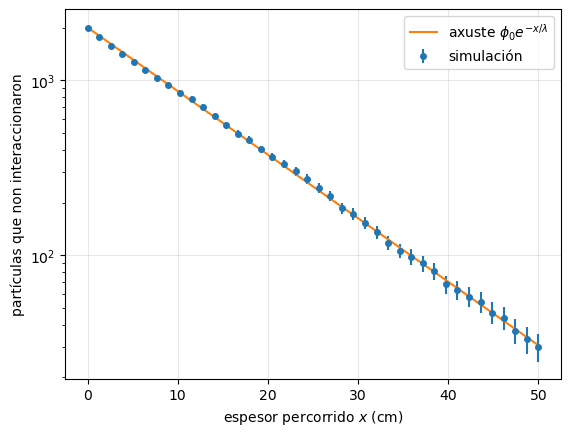
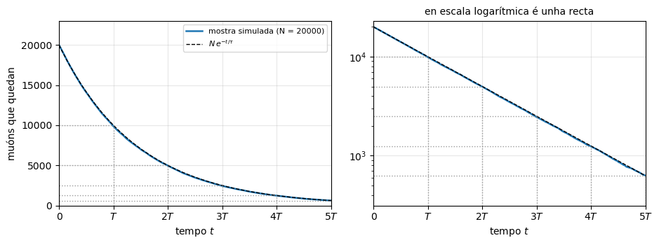
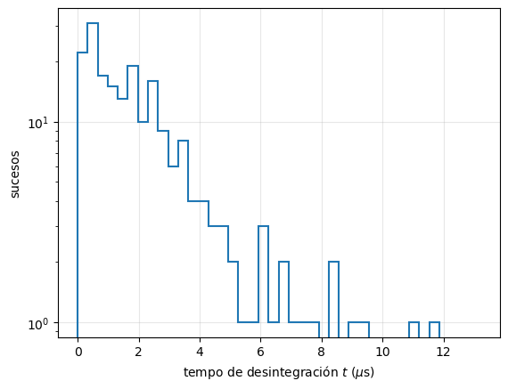
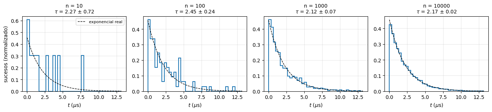
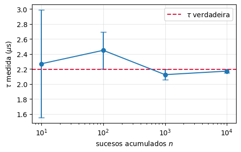
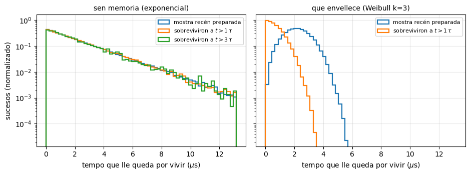
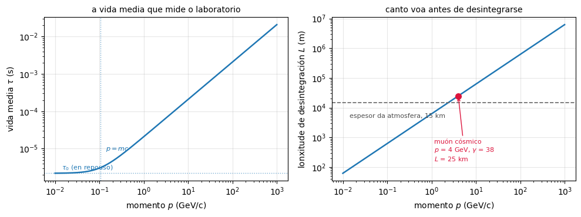
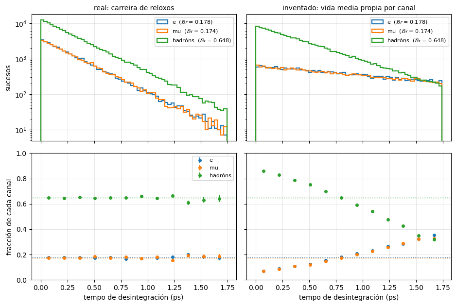
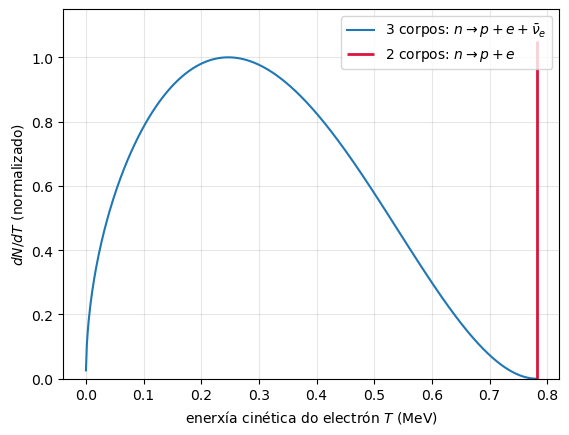

1. Introdución á Física de Partículas#
# Configuración: o código auxiliar está no paquete notebooks/fnyp/
try:
import fnyp
except ModuleNotFoundError: # en Google Colab hai que traer antes o repositorio
!git clone -q https://github.com/xabiercidvidal/USC-FNeP.git
import sys; sys.path.append('USC-FNeP/notebooks')
from fnyp.inicio import *
Last version Fri Sep 25 14:41:57 2026
1.1. Obxectivos#
Unha visión do campo da Física de Partículas:
o seu propósito, as súas relacións con outras ramas da Física e os laboratorios principais.
A linguaxe mínima: como escribimos unha interacción, que se conserva, en que unidades traballamos.
Os observables: como medimos canto e cando ocorre algo (sección eficaz e luminosidade, vida media), que se desintegrou (o invariante \(s\) e a masa invariante) e por que canle (fracción e anchura de desintegración).
Radiacións \(\alpha\), \(\beta\), \(\gamma\): as tres interaccións vistas desde o núcleo.
Dos núcleos aos quarks: como se descobre que algo ten estrutura.
Unha introdución xeral ao Modelo Estándar:
dos compoñentes da materia (fermións) e das forzas (bosóns) que median entre eles.
A cinemática relativista completa (cuadrivectores, variables de Mandelstam) e as simetrías discretas \(C\) e \(P\) trátanse en temas posteriores.
1.2. Sobre a Física de Partículas#
A Física de Partículas é a rama da Física que estuda os corpúsculos máis pequenos (algúns deles quizais elementais) da Natureza e as interaccións que median entre eles.
1.2.1. Escala da Física de Partículas#
A seguinte figura mostra as diferentes escalas en distancia (m). Conforme reducimos a escala pasamos do sólido ao átomo, ao núcleo e, finalmente, ás partículas.
A escala en distancia que corresponde á Física de Partículas é inferior ao femtómetro, \(< 10^{-15}\) m.
Afondamos no interior das partículas usando outras partículas como sonda, por exemplo electróns.
Para explorar distancias cada vez máis pequenas, pola relación de de Broglie, \(\lambda = h /p\), necesitamos sondas con enerxías cada vez maiores.
A seguinte táboa mostra as escalas típicas de distancia (m) e enerxía (eV):
Atómica |
Nuclear |
Partículas |
|
|---|---|---|---|
distancia (m) |
\(10^{-10}\) |
\(10^{-14}\) |
\(10^{-18}\) |
Enerxía (eV) |
\(1\) |
\(10^{6}\) |
\(10^{9-11}\) |
\(\mathcal{O}\)(eV) |
\(\mathcal{O}\)(MeV) |
\(\mathcal{O}\)(GeV-TeV) |
O rango de enerxías da Física de Partículas é \(>\) GeV.
Por iso a Física de Partículas tamén se coñece como Física de Altas Enerxías.
En xeral, a estas enerxías, as partículas son relativistas. Así que o noso marco será a física cuántica e relativista.
[>] Tarefa — Canta enerxía para ver un fermi?
A táboa anterior empareja unha escala de distancia cunha de enerxía. Comproba de onde sae ese emparellamento.
Usando a relación de de Broglie en orde de magnitude, \(\lambda \sim \hbar/p\), e o factor de conversión \(\hbar c = 0.197\) GeV fm:
Que momento necesita unha sonda para resolver unha distancia de \(1\) fm, o tamaño do núcleo?
E para resolver \(10^{-3}\) fm, o alcance da interacción feble?
Entendes agora por que o LHC traballa a TeV?
Solución
De \(\lambda \sim \hbar / p\) obtense \(p \sim \hbar c / \lambda\) (en unidades naturais):
\(p \sim 0.197\,\mathrm{GeV\,fm} / 1\,\mathrm{fm} \approx 0.2\) GeV. Abondan enerxías de centos de MeV: son as da Física Nuclear.
\(p \sim 0.197 / 10^{-3} \approx 200\) GeV. Xa estamos na escala electrofeble.
Cada factor 10 en resolución custa un factor 10 en enerxía. Explorar por debaixo de \(10^{-19}\) m esixe TeV, e por iso os aceleradores son cada vez maiores e máis caros.
1.2.2. Metodoloxía#
Estudamos as interaccións das partículas mediante dous tipos de experimentos: dispersión (scattering) ou colisións.
|
|
Esquema de dispersión |
Esquema de colisión |

Literalmente lanzamos feixes de partículas (principalmente \(e, p, \nu\)) a moi altas enerxías (GeV-TeV) contra brancos (formados por outras partículas, principalmente nucleóns) e observamos as partículas que se producen e as súas distribucións en enerxía e angulares.
1.2.2.1. Dous experimentos, os dous tipos#
esquema de CMS [CERN] |
debuxo de Super-Kamiokande [SK] |
CMS é un experimento de colisión: rodea un dos puntos do LHC onde se cruzan os dous feixes de protóns, e rexistra as partículas que saen en todas as direccións.
Super-Kamiokande (SK) é de branco fixo: un tanque de 50 kt de auga baixo unha montaña no Xapón, onde interaccionan os neutrinos solares, os atmosféricos e os dun feixe enviado desde J-PARC. O branco son os núcleos e os electróns da auga.
O seu sucesor, Hyper-Kamiokande (HK), con 260 kt de auga, comezará a tomar datos en 2028. A USC participa na súa construción (noticia).
1.2.3. Física de Altas Enerxías e aceleradores#
En xeral a materia ordinaria, a excepción dos raios cósmicos, non é relativista.
Como podemos obter feixes de partículas a altas enerxías?
Mediante aceleradores de partículas como o LHC [>], ou mediante os raios cósmicos que chegan á Terra (principalmente protóns, pero tamén neutrinos) producidos en estruturas do Cosmos que actúan como aceleradores naturais.
Por exemplo, o detector IceCube [>] detecta interaccións de neutrinos atmosféricos, solares e cósmicos.
[>] Tarefa — Como se acelera e como se detecta
Antes de seguir, dedica dez minutos a ver como son de verdade estas máquinas:
Mentres os ves, anota: que se acelera e ata que enerxía? Que se detecta en realidade, a partícula ou o rastro que deixa? Por que IceCube ten que ser tan grande?
Pistas para a discusión
O LHC acelera protóns (e ións pesados) ata 6.8 TeV por feixe.
Nunca «vemos» a partícula: vemos a enerxía que deposita ao atravesar o detector (ionización, luz de centelleo, luz Cherenkov…). Todo o demais é reconstrución.
IceCube é enorme porque a sección eficaz do neutrino é minúscula: para observar uns poucos sucesos hai que poñer unha cantidade de branco descomunal. Unha sección eficaz pequena compénsase con moitos núcleos branco — xustamente \(R = \sigma N_b \phi_a\).
1.2.4. Partículas e Cosmoloxía#
A Física de Partículas está moi relacionada coa Cosmoloxía.
Durante os primeiros segundos do Universo, este componíase dunha sopa de partículas.
Esquema da evolución do Universo [PDG] |
Conforme o Universo se arrefriou, as partículas crearon primeiro barións, logo núcleos, átomos e, finalmente, as estrelas e galaxias.
A partir de \(10^{-32}\) s despois do Big Bang, o Universo réxese polo Modelo Estándar ata 100 s despois, cando comezan a formarse núcleos.
Detémonos, por exemplo, na desintegración do neutrón, a desintegración \(\beta\)
Despois da súa creación, o neutrón vive aproximadamente 15 minutos (\(\tau = 878.4\) s), tempo suficiente, afortunadamente, para que se formasen os primeiros núcleos de helio estables, o que sucedeu aos poucos minutos do Big Bang.
[>] Tarefa — E se o neutrón vivise menos
O neutrón libre vive uns 15 minutos, e os primeiros núcleos de helio formáronse nos primeiros minutos tras o Big Bang. É unha coincidencia moi axustada.
Pensa que Universo teriamos se a vida media do neutrón fose de 1 segundo.
Solución
Practicamente todos os neutróns se terían desintegrado antes de que o Universo se arrefriase o suficiente para formar núcleos. Teriamos un Universo case exclusivamente de hidróxeno: sen helio primordial, e cunha historia estelar e química radicalmente distinta.
A composición do Universo depende dun número, \(\tau_n\), que é consecuencia da interacción feble e da pequena diferenza de masa entre \(n\) e \(p\).
Podemos dicir, polo tanto, que existe unha relación de continuidade entre ramas da física:
O Instituto Galego de Física de Altas Enerxías, IGFAE, abrangue as tres ramas e as súas posibles aplicacións. Podes explorar a súa páxina web para máis información.
1.2.5. Relación entre teoría, experimentos e detectores#
A Física de Partículas involucra a física teórica, a experimental e a de detectores.
As tres son esenciais e compleméntanse:
Os avances en detección fan posibles novos descubrimentos
Os descubrimentos marcan as liñas permitidas das teorías
A teoría indica que experimentos son de interese
Pero non unicamente: a Física de Partículas necesita tamén da enxeñaría, da química e da computación.
1.2.6. A gran ciencia#
Os aceleradores e os experimentos de partículas son grandes construcións, en moitas ocasións únicas e singulares, que requiren a participación de centos ou miles de científicos e un gran financiamento.
Os experimentos son moi complexos. A súa planificación, construción e explotación duran ás veces décadas. Por exemplo, ATLAS no LHC,
Imaxe do detector ATLAS durante a súa construción [ATLAS] |
é un dos maiores experimentos construídos e nel traballan preto de 3000 físicos de todo o mundo.
1.2.7. Os grandes Laboratorios#
Os experimentos de Física de Partículas teñen lugar principalmente en grandes laboratorios internacionais.
O CERN, en Xenebra, Suíza, fundado nos anos 50 do século XX, é desde os 80 o principal laboratorio de Física de Partículas. O CERN é un gran campus europeo de investigación onde tiveron lugar experimentos esenciais en Física de Partículas, avances fundamentais como a aparición da WWW, e descubrimentos como os dos bosóns vectoriais \(W^\pm, Z^0\) e o Higgs.
Desde o 1 de xaneiro de 2026 o director xeral do CERN é Mark Thomson, autor dun dos libros de referencia destes apuntamentos, [MT]. Precedeuno Fabiola Gianotti, directora xeral entre 2016 e 2025.
|
|
F. Gianotti, directora xeral do CERN entre 2016 e 2025 |
M. Thomson, director xeral desde 2026 |


Os principais laboratorios de partículas son:
baseados en aceleradores:
CERN (Xenebra, Suíza).
Fermilab (Chicago, Illinois), SLAC (Stanford, California), Brookhaven (Nova York)
KEK (Xapón)
e subterráneos:
[>] Tarefa — Escolle un laboratorio
Escolle un dos laboratorios da lista e descobre:
Que experimento en activo alberga hoxe e que mide?
Participa algún grupo español? (Proba coa web do IGFAE.)
Os catro últimos da lista son subterráneos. O Laboratorio Subterráneo de Canfranc está baixo os Pireneos, con vídeos aquí. Por que se mete un laboratorio debaixo dunha montaña?
Solución da pregunta 3
A rocha actúa de blindaxe fronte aos raios cósmicos. Baixo uns 800 m de rocha o fluxo de muóns cae uns catro ordes de magnitude.
Iso é imprescindible cando se buscan sucesos rarísimos —materia escura, ou a desintegración dobre beta sen neutrinos— nos que un só muón cósmico ao día xa sería un fondo insoportable. A estratexia é a contraria á do LHC: alí búscase producir moitísimos sucesos; aquí, eliminar todo o que non sexa o sinal.
1.2.8. Aplicacións prácticas#
As técnicas de construción dos detectores e de desenvolvemento dos algoritmos de tratamento de datos deron lugar a aplicacións importantísimas noutros campos:
en Física Médica, como por exemplo o PET, que detecta en coincidencia os dous fotóns de aniquilación, os chips de píxeles Medipix do CERN, que deron lugar ao TAC en cor, ou a terapia hadrónica.
O Centro de Protonterapia de Galicia, xunto ao Hospital Gil Casares de Santiago, será o primeiro centro público de protonterapia de España.
ou a aparición da World Wide Web (WWW), quizais un dos momentos revolucionarios da Humanidade.
A web desenvolveuse no CERN para poder presentar e compartir a información.
Co simulador do navegador en modo liña do CERN podes navegar pola web de hoxe tal e como se vía en 1992.
1.3. A linguaxe mínima#
Antes de entrar na fenomenoloxía necesitamos unhas poucas ferramentas: como se escribe unha interacción, que cantidades se conservan e en que unidades traballamos. Con elas, na sección seguinte, veremos que se mide.
De relatividade usamos o xusto: dous números, \(\beta\) e \(\gamma\), e a transformación de Lorentz que se escribe con eles. O formalismo completo —cuadrivectores, cuadrimomento e invariantes— vén no tema de cinemática.
1.3.1. Interaccións#
As interaccións, tanto as nucleares como as das partículas, describímolas mediante ecuacións coma a seguinte:
onde \(a, b\) son as partículas iniciais e \(c, d\) son as finais.
Ou nas desintegracións:
onde a partícula \(a\) se desintegra nas partículas \(b, \, c, \, d\)
Por exemplo: $\( \alpha + \, {}^9\text{Be} \;\longrightarrow\; \,{} ^{12}\text{C} + \, n \)\( \)\( n \to p + e + \bar{\nu}_e \)$
Nota: No primeiro exemplo prodúcese unha reordenación das partículas nos núcleos, pero no segundo caso, toma nota de que se destrúe unha partícula (o \(n\)) e se crean tres: \(p, e, \bar{\nu}_e\)
1.3.2. Sistema do laboratorio e centro de masas#
As interaccións referímolas habitualmente a dous sistemas de referencia:
sistema do centro de masas (a suma dos momentos lineais das partículas iniciais é cero)
sistema de laboratorio (unha das partículas iniciais está en repouso, tipicamente \(b\)).
colisión no centro de masas (esqda.) e en branco fixo (dereita) de dúas partículas \(a, \, b\). |
1.3.3. Cambio de sistema: \(\beta\) e \(\gamma\)#
Cambiar de observador non é inocuo: hai cantidades que cambian de valor ao pasar dun sistema a outro. As cantidades que non cambian —os invariantes— verémolas máis adiante. Aquí abonda con dous números.
Se un sistema se move respecto doutro con velocidade \(v\), definimos
O factor de Lorentz \(\gamma\) mide canto se afasta o movemento do caso non relativista: vale \(\gamma \simeq 1\) cando \(v \ll c\), e medra sen límite cando \(v \to c\). No LHC, un protón de 6.8 TeV ten \(\gamma \approx 7000\).
1.3.4. Os sistemas \(\Sigma\) e \(\Sigma'\)#
A transformación de Lorentz relaciona o espazo-tempo \((t, {\bf r})\) que mide un observador nun sistema inercial \(\Sigma\) co \((t', {\bf r}')\) que mide outro en \(\Sigma'\), que se despraza respecto do primeiro con velocidade \(v\) na dirección \(z\).
|
Sistemas inerciais: \(\Sigma'\) desprázase con velocidade \(v\) respecto de \(\Sigma\) [MT2.2] |

Einstein postulou que a velocidade da luz, \(c\), é a mesma nos dous sistemas, e que nada pode viaxar máis rápido ca ela, \(v < c\). Un pulso de luz emitido en \(t = t' = 0\), cando as orixes coinciden, cumpre entón
Esa condición satisfaise se as coordenadas están relacionadas por
onde \(\beta\) e \(\gamma\) son os dous números que acabamos de definir. A forma matricial compacta desta transformación escribímola máis abaixo, unha vez introducidas as unidades naturais.
1.3.5. Unidades naturais#
Coidado! En física de partículas usamos unidades naturais, isto é \(c = 1\) e \(\hbar = 1\).
As masas, os momentos e as enerxías mídense entón nas mesmas unidades (eV, MeV, GeV), e escribimos
As \(c\) repóñense cando fagan falta por análise dimensional. Para os cálculos numéricos é cómodo lembrar
É a convención do resto do tema e da materia.
Con \(\hbar = c = 1\), toda magnitude pasa a ser unha potencia da enerxía, e a unidade de referencia é o GeV:
magnitude |
SI |
con \(\hbar, c\) |
en NU |
exemplo |
|---|---|---|---|---|
enerxía |
kg m\(^2\) s\(^{-2}\) |
GeV |
GeV |
\(E = 1\) GeV |
momento |
kg m s\(^{-1}\) |
GeV\(/c\) |
GeV |
\(\mathrm{p} = 1\) GeV |
masa |
kg |
GeV\(/c^2\) |
GeV |
\(m_p = 0.938\) GeV |
tempo |
s |
\(\hbar/\)GeV |
GeV\(^{-1}\) |
\(\tau_\mu = 3.3 \cdot 10^{18}\) GeV\(^{-1}\) |
lonxitude |
m |
\(\hbar c/\)GeV |
GeV\(^{-1}\) |
\(r_p \simeq 4.1\) GeV\(^{-1}\) |
sección eficaz |
m\(^2\) |
\((\hbar c/\)GeV\()^2\) |
GeV\(^{-2}\) |
1 mb \(= 2.6\) GeV\(^{-2}\) |
Nótese que tempo e lonxitude teñen a mesma dimensión, \(\mathrm{GeV}^{-1}\), e que o inverso dunha vida media é, polo tanto, unha enerxía.
Os factores de conversión que convén lembrar:
Para volver ao SI repóñense os \(\hbar\) e \(c\) que fagan falta por análise dimensional. Por exemplo, o raio do protón: \(4.1 \; \mathrm{GeV}^{-1} \times 0.197 \; \mathrm{GeV \, fm} = 0.81\) fm.
1.3.6. O cambio de sistema, en unidades naturais#
Con \(c = 1\) a transformación de Lorentz que acabamos de ver escríbese de forma compacta. De \(\Sigma\) a \(\Sigma'\), que se move con velocidade \(\beta\) en \(z\):
Toda a matriz está feita con \(\gamma\) e \(\gamma\beta\): as direccións transversais non se tocan, e o tempo e a coordenada lonxitudinal mestúranse entre si.
A transformación inversa, \(\Sigma' \to \Sigma\), é a mesma co signo da velocidade cambiado:
simplemente a velocidade cambia de signo!
1.3.6.1. Da partícula en repouso ao laboratorio#
Unha partícula de masa \(m\) en repouso ten enerxía \(E' = m\) e non ten momento, \({\bf p}' = {\bf 0}\). Outro observador inercial mídelle unha enerxía \(E\) e un momento \({\bf p}\). Eses catro números forman o cuadrimomento, \(p = (E, {\bf p})\).
O cuadrimomento transfórmase igual que o cuadrivector \((t, {\bf r})\): \(E\) fai de compoñente temporal e \({\bf p}\) de compoñente espacial.
Sexa \(\Sigma'\) o sistema en que a partícula está en repouso, con \((E', {\bf p}') = (m, {\bf 0})\). Para o observador do laboratorio, \(\Sigma\), que a ve moverse con velocidade \(\beta\) en \(z\), abonda con aplicar a transformación \(\Sigma' \to \Sigma\):
É dicir, \(E = \gamma \, m\) e \(\mathrm{p} = \gamma \beta \, m\), de onde saen as relacións de traballo, que dan \(\gamma\) e \(\beta\) a partir do que mide o detector:
Nótese que \(\gamma\) e \(\beta\) non son propiedades da partícula, senón da partícula vista por un observador. A masa \(m\) si é súa.
E eliminando \(\beta\) e \(\gamma\) entre as dúas expresións, \(E = \gamma m\) e \(\mathrm{p} = \gamma\beta m\), obtense a ecuación de Einstein:
Esa combinación é o cadrado da norma do cuadrimomento, \(p^2 \equiv E^2 - \mathrm{p}^2 = m^2\), e é invariante: todos os observadores miden a mesma masa, aínda que cada un mida un \(E\) e un \(\mathrm{p}\) distintos. Non é casualidade: as transformacións de Lorentz son xustamente as que preservan a norma dos cuadrivectores.
É a primeira cantidade invariante que atopamos, e a máis importante do curso: na sección de observables xeneralizámola a sistemas de varias partículas (a masa invariante), coa que se descobren as partículas.
E definimos a enerxía cinética, \(T\), como:
[>] Tarefa — Por que $(E, {\bf p})$ se transforma como $(t, {\bf r})$?
Acabamos de aplicarlle a \((E, {\bf p})\) a matriz de Lorentz, que estaba definida para \((t, {\bf r})\). Imos xustificalo.
O momento newtoniano, \({\bf p} = m \, \mathrm{d}{\bf r} / \mathrm{d}t\), non nos serve en sistemas relativistas: o numerador transfórmase, pero o denominador \(\mathrm{d}t\) tamén. A saída é dividir por un tempo no que todos os observadores estean de acordo: o tempo propio \(\tau\), o que marca un reloxo que viaxa coa partícula.
Partindo de \(\mathrm{d}\tau^2 = \mathrm{d}t^2 - \mathrm{d}{\bf r}^2\), comproba que \(\mathrm{d}\tau\) é invariante Lorentz e que \(\mathrm{d}t / \mathrm{d}\tau = \gamma\).
Definimos o cuadrimomento como
Por que \(p^\mu\) ten que transformarse coa mesma matriz que \(x^\mu\)? (Fíxate en que é invariante e que non nesa definición.)
Calcula as catro compoñentes de \(p^\mu\). Que son?
Calcula \(E^2 - {\bf p}^2\). E desenvolve \(E = \gamma m\) para \(v \ll 1\): por que lle chamamos enerxía á compoñente temporal?
Solución
\(\mathrm{d}\tau^2 = \mathrm{d}t^2 - \mathrm{d}{\bf r}^2\) é xusto a combinación que a transformación de Lorentz deixa igual (a mesma que \(c^2t^2 - {\bf r}^2\) do principio): todos os observadores calculan o mesmo \(\mathrm{d}\tau\), aínda que cada un mida o seu propio \(\mathrm{d}t\) e o seu propio \(\mathrm{d}{\bf r}\). Sacando factor común \(\mathrm{d}t\),
que non é máis que a dilatación temporal: \(\mathrm{d}\tau\) é o tempo propio.
\(\mathrm{d}x^\mu = (\mathrm{d}t, \mathrm{d}{\bf r})\) transfórmase coa matriz de Lorentz por definición: é unha diferenza de coordenadas e a transformación é lineal. Ao construír \(p^\mu\) só o multiplicamos por dous invariantes, a masa \(m\) e o número \(1/\mathrm{d}\tau\), iguais para todos os observadores. Multiplicar por algo que non cambia non pode estragar unha lei de transformación, así que \(p^\mu\) transfórmase igual que \(x^\mu\). Hérdao; non hai que demostrar nada novo.
Usando \(\mathrm{d}t/\mathrm{d}\tau = \gamma\) e \(\mathrm{d}{\bf r}/\mathrm{d}\tau = (\mathrm{d}{\bf r}/\mathrm{d}t)(\mathrm{d}t/\mathrm{d}\tau) = \gamma {\bf v}\):
A compoñente temporal é a enerxía e as tres espaciais o momento, tal como os usamos arriba.
A norma reproduce a ecuación de Einstein:
E a baixa velocidade, con \(\gamma \simeq 1 + \tfrac{1}{2} v^2\),
enerxía en repouso máis enerxía cinética newtoniana. Por iso identificamos esa compoñente coa enerxía.
A moralexa, que reaparece en todo o curso: (invariante) \(\times\) (cuadrivector) é un cuadrivector. Ollo cos nomes: o cuadrimomento \(p^\mu\) non é invariante —cada observador mide un \((E, {\bf p})\) distinto—; o invariante é a súa norma, \(p^2 = m^2\).
1.3.7. Cantidades conservadas e invariantes#
Os físicos buscamos cantidades obxectivas, que varios observadores (polo menos entre sistemas de referencia Lorentz) midan igual: son as cantidades invariantes.
E buscamos tamén cantidades que valan o mesmo antes e despois da interacción ou da desintegración: son as cantidades conservadas.
Son dúas propiedades independentes:
non invariante |
invariante |
|
|---|---|---|
non conservada |
A enerxía cinética |
a suma das masas |
conservada |
a enerxía, o momento lineal, o momento angular |
a carga eléctrica, a masa de cada partícula e a masa invariante do sistema |
A enerxía consérvase, pero cada observador asígnalle un valor distinto. Coa masa dunha partícula pasa o contrario: todos os observadores miden a mesma, pero a suma non se conserva na interacción. A carga eléctrica total e a masa invariante do sistema si son as dúas cousas á vez.
Neste tema percorremos a columna das conservadas. Dos invariantes usaremos só un, \(s\), e con el a masa invariante, na sección de observables; o resto —as variables de Mandelstam— desenvolvémolo no tema de cinemática.
[>] Tarefa — E se non se conservasen?
Que cres que pasaría se non se conservase a enerxía? E se non se conservase a carga eléctrica?
Solución
Sen conservación da enerxía poderiamos construír un móbil perpetuo: abondaría con levar un sistema por un ciclo pechado e recuperar máis enerxía da investida. Polo teorema de Noether, iso equivale a dicir que os fenómenos físicos cambian co tempo: un experimento feito hoxe e repetido mañá daría resultados distintos, e a propia idea de lei física viríase abaixo.
Sen conservación da carga o electrón podería desintegrarse, por exemplo en \(e \to \nu_e + \gamma\), que respecta o número leptónico e está permitido enerxeticamente. Os átomos non serían estables e non habería química. O límite experimental sobre esa desintegración é enorme, \(\tau > 10^{28}\) anos.
Nos dous casos a moralexa é a mesma: as leis de conservación non son detalles técnicos, son o que fai que o Universo teña estruturas estables e que a física sexa posible.
1.3.7.1. Conservadas: as simetrías continuas#
Sabemos polo teorema de E. Noether que por cada simetría continua que presenta un sistema físico se conserva unha cantidade asociada.
Neste caso para:
invariancia baixo translacións temporais, conservación da enerxía.
invariancia baixo translacións espaciais, conservación do momento lineal.
invariancia baixo rotacións, conservación do momento angular.
1.3.7.2. Enerxía e momento#
Nunha interacción \(a + b \to c + d\) consérvanse por separado a enerxía e o momento lineal:
Como vimos ao cambiar de sistema, a enerxía e o momento lineal transfórmanse xuntos: son as catro compoñentes dun mesmo obxecto, o cuadrimomento. No tema de cinemática desenvolvémolo e vemos canto simplifica as contas tratalos xuntos.
En xeral, para calquera número de partículas, \(\sum_i^{iniciais} {\bf p}_i = \sum_j^{finais} {\bf p}_j\). E no sistema do centro de masas ambas as dúas sumas son nulas.
momento no sis. lab |
momento no sis. c.m. [M. Caamaño] |
[>] Tarefa — Le os diagramas
Nas dúas figuras anteriores:
Que valor ten \({\bf p}_b\)? E \({\bf p}'_b\)?
Canto vale \({\bf p}'_c + {\bf p}'_d\)?
Pode ser nulo \({\bf p}_c + {\bf p}_d\) no sistema laboratorio?
Solución
\({\bf p}_b = 0\): no laboratorio a partícula \(b\) é o branco fixo, está en repouso, e por iso na figura non lle corresponde ningunha frecha. No centro de masas, \({\bf p}'_b = - {\bf p}'_a\); esa é precisamente a definición do c.m., que o momento lineal total inicial sexa nulo.
\({\bf p}'_c + {\bf p}'_d = 0\), por conservación do momento lineal: se a suma era cero antes, séguea sendo despois. No c.m. as partículas finais saen sempre costas con costas.
Non. No laboratorio \({\bf p}_c + {\bf p}_d = {\bf p}_a \neq 0\): o sistema arrastra o momento da partícula incidente. Esta é a razón de que en branco fixo unha parte da enerxía se «desperdicie» no movemento do conxunto e non estea dispoñible para crear masa. Cuantificarémolo co invariante \(s\): por iso a enerxía limiar en branco fixo é maior que \(|Q|\).
1.3.7.3. Momento angular#
No caso da conservación do momento angular, debemos considerar o espín das partículas!
onde \(J\) é o espín de cada partícula e \(\ell\) o momento angular orbital relativo do par. Ollo: é unha composición de momentos angulares, non unha suma escalar.
O momento angular orbital fíxao o parámetro de impacto \(d\), a distancia entre a traxectoria de \(a\) e o branco: \(\ell = d \, \mathrm{p}\).
parámetro de impacto no sis. lab |
e no sis. c.m. [M. Caamaño] |
1.3.7.4. O valor \(Q\) da reacción#
A enerxía e o momento consérvanse, pero a suma das masas non: as partículas finais non teñen por que sumar a mesma masa que as iniciais, e a diferenza convértese en enerxía cinética ou ao revés.
Definimos o valor \(Q\) da reacción \(a + b \to c + d\) como a diferenza de masas iniciais e finais:
que é a enerxía liberada tras a interacción (se \(Q>0\)), ou ben a enerxía cinética mínima no centro de masas, \(|Q|\), para que a interacción poida ter lugar (se \(Q<0\)).
No caso das desintegracións: \(a \to b + c + d\), para que teña lugar debe cumprirse que:
Con esa enerxía mínima as partículas créanse en repouso, sen movemento, no c.m.
Ollo: \(Q\) é a enerxía liberada ou da reacción, non a enerxía da interacción: a enerxía dispoñible no centro de masas é \(\sqrt{s}\), que veremos co invariante \(s\). Para a carga eléctrica usaremos \(q\).
[>] Tarefa — A $Q$ da desintegración do neutrón
Coas masas (en MeV): \(m_n = 939.565\), \(m_p = 938.272\), \(m_e = 0.511\), e \(m_\nu \approx 0\), calcula:
A \(Q\) de \(n \to p + e + \bar{\nu}_e\). Que fracción da masa do neutrón é?
E a \(Q\) do proceso análogo sobre un protón libre, \(p \to n + e^+ + \nu_e\)?
Que enerxía cinética máxima pode levar o electrón?
Solución
\(Q = m_n - m_p - m_e = 939.565 - 938.272 - 0.511 = 0.782\) MeV. É o \(0.08\%\) de \(m_n\): o neutrón desintégrase por moi pouca marxe. Se a diferenza \(m_n - m_p = 1.293\) MeV fose menor que \(m_e = 0.511\) MeV, o neutrón libre sería estable e a química do Universo sería outra.
\(Q = m_p - m_n - m_e = -1.804\) MeV \(< 0\): prohibido. O protón libre non se desintegra. Dentro dun núcleo si pode ocorrer, porque a enerxía de ligazón cambia o balance: é a desintegración \(\beta^+\).
\(T_e^{\mathrm{max}} = Q = 0.782\) MeV, cando o neutrino leva enerxía nula. (Estritamente hai que descontar o retroceso do protón, pero como \(m_p \gg Q\) é desprezable.) Ese é o punto final do espectro \(\beta\), e medilo con precisión é unha das maneiras de buscar a masa do neutrino.
Fíxate en que esta \(Q\) tan pequena é a que explica que o neutrón viva 15 minutos, unha eternidade para unha desintegración feble. Volveremos sobre iso.
1.4. Observables#
Con esa linguaxe xa podemos dicir que se mide en Física Nuclear e de Partículas. Case todo o que publica un experimento responde a unha destas preguntas:
pregunta |
observable |
|---|---|
canto ocorre un proceso? |
a sección eficaz, \(\sigma\), e con ela a luminosidade |
cando se desintegra unha partícula? |
a vida media, \(\tau\) |
que se desintegrou?, con canta enerxía chocamos? |
o invariante \(s\): a masa invariante e \(\sqrt{s}\) |
por que canle se desintegra? |
a fracción de desintegración, \(\mathcal{Br}\), e a anchura, \(\Gamma\) |
1.4.1. Sección eficaz#
Unha boa parte dos experimentos en Nuclear e Partículas son de dispersión: lanzamos partículas sonda contra un branco doutras partículas. E estudamos a dispersión das partículas sonda \(a\) ou as interaccións \(a + b \to c + d\).
ilustración de sección eficaz diferencial [M. Caamaño] |
Para iso contamos primeiro o número de interaccións por segundo. Dividíndoo polo fluxo de partículas sonda e polo número de partículas branco, definimos a sección eficaz —no caso de experimentos de branco fixo— como:
onde \(R\) é o número de interaccións dun determinado tipo por segundo, \(a + b \to c + d\), \(N_b\) é o número de partículas branco, e \(\phi_a\) o fluxo de partículas sonda, isto é, o número de sondas por segundo e por unidade de área, \(\phi_a = (N_a/t)/S\), onde \(S\) é a área de exposición.
A sección eficaz ten dimensións de área, \([\sigma] = \mathrm{m}^2\), e a unidade habitual é o barn, \(1\ \mathrm{b} = 10^{-24}\ \mathrm{cm}^2\).
1.4.1.1. Luminosidade#
A definición anterior mestura dúas cousas de natureza distinta. Escrita como
a sección eficaz \(\sigma\) pona a Natureza —depende só do proceso e da enerxía— e a luminosidade \(\mathcal{L} = \phi_a N_b\) pona o experimento: cantas sondas lanzamos e contra cantos brancos. Mídese en \(\mathrm{cm^{-2}\,s^{-1}}\).
A vantaxe de separalas é que \(R = \sigma \mathcal{L}\) vale tamén nun colisionador, onde non hai branco en repouso senón dous feixes que se cruzan: a luminosidade determínaa o acelerador, e a relación non cambia. No LHC, \(\mathcal{L} \sim 2 \cdot 10^{34}\ \mathrm{cm^{-2}\,s^{-1}}\).
Un experimento non conta un ritmo, senón sucesos ao longo de toda a toma de datos. Integrando no tempo:
A luminosidade integrada \(\mathcal{L}_{\mathrm{int}}\) ten dimensións de inverso de área e dáse en \(\mathrm{fb^{-1}}\) (\(1\ \mathrm{fb} = 10^{-15}\ \mathrm{b} = 10^{-39}\ \mathrm{cm^2}\)): con \(1\ \mathrm{fb^{-1}}\) prodúcese, en media, un suceso dun proceso de \(1\) fb.
E ao revés, así se mide unha sección eficaz: cóntanse \(N\) sucesos, corríxese pola eficiencia \(\epsilon\) coa que o detector os selecciona, e divídese pola luminosidade:
[>] Tarefa — Cantos Higgs produciu o LHC?
A figura mostra a luminosidade integrada que o LHC lle entregou a ATLAS (verde) e a que ATLAS rexistrou (amarelo) nas súas tres tomas de datos, ou Runs.
Luminosidade integrada entregada polo LHC e rexistrada por ATLAS, 2010–2026 [ATLAS] |
A \(13\) TeV, a sección eficaz de produción do Higgs é \(\sigma_H \simeq 55\) pb, e a sección eficaz inelástica protón-protón, \(\sigma_{\mathrm{inel}} \simeq 80\) mb.
Cantos Higgs se produciron no Run 2 dentro de ATLAS? E cantos rexistrou o detector?
Con \(\mathcal{L} = 2 \cdot 10^{34}\ \mathrm{cm^{-2}\,s^{-1}}\), cantos Higgs se producen por segundo? E cantas colisións inelásticas?
Cantas colisións hai que examinar para atopar un Higgs? Que obriga iso a facer cos datos?
En branco fixo, \(\mathcal{L} = \phi_a N_b\). Un feixe de \(10^{12}\) protóns por segundo atravesa 1 cm de hidróxeno líquido (\(\rho = 0.071\ \mathrm{g/cm^3}\)). Canto vale \(\mathcal{L}\)? Depende da área do feixe?
Solución
\(\sigma_H = 55\ \mathrm{pb} = 5.5 \cdot 10^4\) fb. Coa luminosidade entregada no Run 2, \(156\ \mathrm{fb^{-1}}\), producíronse \(N \simeq 5.5 \cdot 10^4 \times 156 \approx 8.6 \cdot 10^6\) Higgs; coa rexistrada, \(147\ \mathrm{fb^{-1}}\), ATLAS gravou \(\approx 8.1 \cdot 10^6\). A diferenza, un 6 %, son os intres en que o detector non está listo para gravar. E dos rexistrados só se identifica unha pequena fracción: verémolo coas fraccións de desintegración.
\(\sigma_H = 5.5 \cdot 10^{-35}\ \mathrm{cm^2}\), logo \(R_H = 5.5 \cdot 10^{-35} \times 2 \cdot 10^{34} \approx 1\) Hz: un Higgs por segundo. Con \(\sigma_{\mathrm{inel}} = 8 \cdot 10^{-26}\ \mathrm{cm^2}\), \(R_{\mathrm{inel}} \approx 1.6 \cdot 10^9\) Hz.
\(\sigma_{\mathrm{inel}} / \sigma_H \approx 1.5 \cdot 10^9\): unha de cada mil cincocentos millóns de colisións. Non se poden gardar todas; un sistema de disparo (trigger) decide en tempo real que sucesos se gardan. Verémolo na parte experimental.
A densidade de protóns é \(n = \rho N_A / M = 0.071 \times 6.02 \cdot 10^{23} / 1.008 = 4.2 \cdot 10^{22}\ \mathrm{cm^{-3}}\). Cun feixe de intensidade \(I\) e área \(S\), \(\phi_a = I/S\) e \(N_b = n S d\), así que \(\mathcal{L} = I \, n \, d = 10^{12} \times 4.2 \cdot 10^{22} \times 1 \approx 4 \cdot 10^{34}\ \mathrm{cm^{-2}\,s^{-1}}\). A área cancélase. Cun centímetro de hidróxeno xa se iguala ao LHC: ao branco fixo non lle falta luminosidade, fáltalle enerxía dispoñible no centro de masas.
[>] Tarefa — Cantos neutrinos solares interaccionan contigo?
O Sol produce enerxía fusionando hidróxeno en helio, e emite neutrinos \(\nu_e\). Os máis enerxéticos proceden da desintegración do \(^8\mathrm{B}, \,^8\mathrm{B} \to \,^8\mathrm{Be}^* + e^+ + \nu_e\): chegan á Terra cun fluxo \(\phi_\nu \simeq 5 \cdot 10^{6}\ \mathrm{cm^{-2}\,s^{-1}}\) e unha enerxía media duns \(7\) MeV. Son os que detectan Super-Kamiokande e SNO.
A esas enerxías o neutrino interacciona coa materia ordinaria sobre todo dispersándose cun electrón, \(\nu_e + e \to \nu_e + e\), cunha sección eficaz \(\sigma \simeq 10^{-44}\ \mathrm{cm^2} \times E/\mathrm{MeV}\) por electrón. Toma un neutrino medio e ignora as oscilacións.
Cantos neutrinos do \(^8\)B te atravesan cada segundo? Toma unha área de \(0.5\ \mathrm{m^2}\).
Un adulto de \(70\) kg é, a efectos prácticos, auga. Cantos electróns ten?
Cantas interaccións esperas en \(50\) anos? Cada canto tempo, en media, interacciona un deles contigo?
Solución
\(\phi_\nu S = 5 \cdot 10^{6} \times 5 \cdot 10^{3} \approx 2.5 \cdot 10^{10}\) neutrinos por segundo, de día e de noite: a Terra non os detén.
\(N_e = \frac{70 \cdot 10^{3}}{18.0} \times 6.02 \cdot 10^{23} \times 10 \approx 2.3 \cdot 10^{28}\) electróns (10 por molécula de auga).
Para \(E = 7\) MeV, \(\sigma \simeq 7 \cdot 10^{-44}\ \mathrm{cm^2}\). Con \(R = \sigma \, \phi_\nu N_e\) (o branco é o corpo enteiro, \(\mathcal{L} = \phi_\nu N_e\)): \(R = 7 \cdot 10^{-44} \times 5 \cdot 10^{6} \times 2.3 \cdot 10^{28} \approx 8 \cdot 10^{-9}\) Hz. En \(50\) anos, \(t = 1.6 \cdot 10^{9}\) s, logo \(N = R\,t \approx 13\) interaccións: unha cada catro anos. Coas oscilacións, parte dos \(\nu_e\) chegan como \(\nu_\mu\) ou \(\nu_\tau\), que se dispersan menos cos electróns: o número redúcese á metade.
Ningunha destas interaccións deixa pegada: o neutrino cede como moito uns MeV a un electrón, moito menos que a radioactividade natural do propio corpo (\(^{40}\)K, unhas \(4 \cdot 10^{3}\) desintegracións por segundo).
En moitas ocasións consideramos a sección eficaz diferencial respecto da enerxía da partícula sonda:
Ou respecto do ángulo de dispersión
ilustración de sección eficaz diferencial [M. Caamaño] |
[Wiki] |
1.4.1.2. A sección eficaz depende da enerxía#
A sección eficaz non é un tamaño fixo: depende do proceso e da enerxía. A figura mostra \(\sigma(e^+ + e \to \mathrm{hadróns})\) medida por OPAL, un dos catro experimentos do colisionador LEP (CERN, 1989–2000), fronte á enerxía total no centro de masas, \(E_{e^+} + E_{e}\) (os dous feixes teñen a mesma enerxía).
\(\sigma(e^+ + e \to \mathrm{hadróns})\): datos (puntos) e predición do Modelo Estándar (liña) [OPAL] |
Que ves? Antes de seguir, fíxate en tres cousas:
a sección eficaz pasa de 5 a 30 nb en apenas 3 GeV, e volve caer;
o máximo está arredor de 91 GeV;
o pico non é unha liña: ten unha anchura duns 2.5 GeV.
A esa enerxía o par \(e^+e\) aniquílase e crea unha partícula, o bosón \(Z\), de masa \(m_Z \simeq 91.2\) GeV, que se desintegra axiña, entre outras cousas, en quarks. Un pico na sección eficaz fronte á enerxía é a sinatura dunha partícula: unha resonancia.
A anchura do pico non é un defecto do detector. Volveremos a esta figura ao falar da anchura de desintegración.
1.4.1.3. Brancos extensos#
Que pasa se o branco ten un espesor \(d\), unha densidade \(\rho\) e masa atómica \(M_B\)? Canto se reduce o fluxo de partículas inicial \(\phi_a\)?
Interaccións nun branco extenso [M. Caamaño] |
Solución:
Nunha rebanda de espesor \(\Delta x\) hai
núcleos branco. Pola definición de sección eficaz, o número de interaccións por segundo na rebanda é
Cada interacción saca unha partícula do feixe. E como o fluxo é un ritmo por unidade de área, a perda de fluxo é ese ritmo dividido por \(S\):
onde a área de exposición se cancela. Isto é:
onde:
que corresponde á lonxitude de interacción. Coa densidade de núcleos branco \(n = \rho \, N_A / M_B\) queda \(\lambda = 1/(\sigma \, n)\), a forma habitual do percorrido libre medio.
[>] Tarefa — Mide a lonxitude de interacción
Acabas de deducir que o fluxo cae como \(\phi(x) = \phi_0 \, e^{-x/\lambda}\). Agora mídeo, como faría un experimento.
A simulación lanza \(n\) partículas contra un branco e rexistra a que profundidade interacciona cada unha. Contando as superviventes reconstrúe \(\phi(x)\) e axusta unha exponencial.
Recupera a \(\lambda\) de entrada?
Baixa a
n=100. Segue funcionando? Canto te fías do número que sae?Sobe
espesora \(200\) cm. Mellora ou empeora o axuste? Por que?
sim.atenuacion(n=2000, lambda_real=12., espesor=50.);
lambda de entrada = 12.00 cm
lambda medida = 11.95 cm (con n = 2000 sucesos)

[>] Tarefa — Canto chumbo para deter un neutrino?
Un neutrino de \(1\) MeV, como os dun reactor ou os do Sol, ten unha sección eficaz de \(\sigma \sim 10^{-44}\ \mathrm{cm^2}\) por nucleón. O chumbo ten \(\rho = 11.35\ \mathrm{g/cm^3}\) e \(M = 207.2\) g/mol.
Calcula a lonxitude de interacción \(\lambda\) do neutrino en chumbo. Exprésaa en anos luz.
Compáraa coa dun fotón de \(1\) MeV en chumbo, \(\lambda_\gamma \simeq 1.2\) cm. Que fracción de neutrinos interacciona nunha blindaxe de \(10\) cm de chumbo?
Solución
Cada gramo ten \(N_A\) nucleóns, así que a densidade de nucleóns é \(n = \rho N_A = 11.35 \times 6.02 \cdot 10^{23} = 6.8 \cdot 10^{24}\ \mathrm{cm^{-3}}\). (Por núcleo sae o mesmo: \(\sigma\) é \(207\) veces maior e hai \(207\) veces menos núcleos.)
\[ \lambda = \frac{1}{\sigma \, n} = \frac{1}{10^{-44} \times 6.8 \cdot 10^{24}} \approx 1.5 \cdot 10^{19}\ \mathrm{cm} = 1.5 \cdot 10^{17}\ \mathrm{m} \]Con \(1\) ano luz \(= 9.5 \cdot 10^{15}\) m: \(\lambda \approx 15\) anos luz de chumbo, máis ca a distancia ás estrelas máis próximas.
\(\lambda / \lambda_\gamma \sim 10^{19}\). En \(10\) cm, que deteñen case todos os fotóns (pasan \(e^{-10/1.2} \approx 2 \cdot 10^{-4}\)), interacciona unha fracción \(d/\lambda \approx 10 / 1.5 \cdot 10^{19} \approx 7 \cdot 10^{-19}\) dos neutrinos. Por iso os detectores de neutrinos son enormes e blíndanse contra todo o demais, non contra os neutrinos.
1.4.2. Vida media#
Outro dos observables principais en Física Nuclear e de Partículas é o tempo de desintegración. Antes de escribir ningunha fórmula, miremos o que se mide.
Preparamos unha mostra grande de muóns, que se desintegran segundo \(\mu \to e + \bar{\nu}_e + \nu_\mu\), e imos contando cantos quedan. Ao cabo dun intervalo \(T\) desintegrouse a metade.
E no seguinte intervalo \(T\)? Acábanse? Opina antes de executar a seguinte cela.
sim.supervivientes(n=20000, tau_real=2.197);
# o panel da dereita está en escala logarítmica: ln N(t) é unha recta de pendente -1/tau_real
mostra inicial N = 20000
vida media tau = 2.197
semidesintegración T = tau ln2 = 1.523
quedan N/2^k
t = 1T 9872 10000.0
t = 2T 4978 5000.0
t = 3T 2452 2500.0
t = 4T 1235 1250.0
t = 5T 626 625.0

1.4.2.1. O que se observa#
Non se acaban. No segundo intervalo desintégrase a metade dos que quedaban; no terceiro, a metade deses; e así indefinidamente. A mostra non perde cantidades iguais, redúcese por factores iguais.
Chamemos \(S(t) = N(t)/N(0)\) á probabilidade de sobrevivir ata \(t\). O que cumpren os datos, para dous intervalos calquera, é
sobrevivir un anaco e logo outro máis é o produto das dúas supervivencias.
Que lei diferencial segue entón a desintegración de \(N\) partículas?
1.4.2.2. A lei de desintegración#
Abonda con ler esa identidade para un intervalo pequeno. A probabilidade de que unha partícula se desintegre en \(\mathrm{d}t\) é sempre a mesma, e escribímola
onde a constante \(\tau\) ten dimensións de tempo. A probabilidade de sobrevivir ese \(\mathrm{d}t\) é \(S(\mathrm{d}t) = 1 - \mathrm{d}t/\tau\), e entón
Con \(N\) partículas independentes, \(N(t) = N(0) \, S(t)\), é a mesma ecuación. O signo é negativo porque as que se desintegran saen da mostra:
que é a curva que acabamos de contar, \(2^{-t/T}\), escrita en base \(e\). Á constante \(\tau\) chamámola tempo de vida media.
E se o intervalo non é pequeno?
\(\mathrm{d}p = \mathrm{d}t/\tau\) só vale mentres a probabilidade sexa pequena: se en 1 s vale \(10^{-3}\), extrapolar linealmente a \(10^4\) s daría 10, que non é unha probabilidade. Un intervalo finito constrúese compoñendo moitos intervalos pequenos, e iso é xusto o que fai integrar a ecuación.
1.4.2.3. A vida media é a media dos tempos#
O nome non é casual: \(\tau\) é literalmente o tempo que vive en media unha partícula. O tempo de desintegración dunha partícula distribúese coa densidade de probabilidade \(f(t) = \frac{1}{\tau} e^{-t/\tau}\) —a \(\mathrm{d}N/\mathrm{d}t\) da lei, cambiada de signo e normalizada a unha partícula—, e de aí obtemos a súa media:
É dicir, a vida media. É ademais o tempo no que a mostra se reduce a \(1/e \simeq 37 \, \%\). E medir unha vida media é, sinxelamente, promediar os tempos de desintegración que rexistra o detector.
Por exemplo, o neutrón desintégrase \(n \to p + e + \bar{\nu}_e\) con \(\tau = 878.4\) s, uns 15 minutos. E o muón, \(\mu \to e + \bar{\nu}_e + \nu_\mu\), ten \(\tau = 2.197\ \mu\)s.
[>] Tarefa — Mide unha vida media
Simula a desintegración dunha mostra de muóns (\(\tau = 2.197\ \mu\)s) e mide \(\tau\) a partir dos datos, sen mirar o valor de entrada.
Executa a primeira cela. A cantas desviacións típicas queda o valor medido do real? Volve executala: a semente é aleatoria, así que é outra toma de datos e sae outro número. Cantas veces de dez esperas quedar a máis de 1 σ?
A segunda cela acumula sucesos: o histograma de \(n=100\) contén os 10 anteriores, e así ata \(10^4\). A partir de cantos sucesos recoñeces a forma exponencial? E a partir de cantos dirías que a medida é fiable?
Como escala o erro co número de sucesos? Se quixeses mellorar a túa medida un factor 10, canto terías que aumentar a estatística?
sim.vida_media(n=200, tau_real=2.197);
tau de entrada = 2.1970
tau medida = 2.2496 +- 0.1591 (0.3 sigmas da de entrada, con n = 200)

sim.vida_media_evolucion(ns=(10, 100, 1000, 10000), tau_real=2.197);
# Na clase: descomenta a liña seguinte para velo como animación.
# Ollo: non gardes o notebook coa súa saída (~1.5 MB por animación).
# sim.vida_media_animada(n_max=10000, tau_real=2.197)
tau de entrada = 2.1970
n = 10 -> tau = 2.2699 +- 0.7178 (0.1 sigmas)
n = 100 -> tau = 2.4486 +- 0.2449 (1.0 sigmas)
n = 1000 -> tau = 2.1247 +- 0.0672 (1.1 sigmas)
n = 10000 -> tau = 2.1714 +- 0.0217 (1.2 sigmas)


Solución da pregunta 3
O erro escala como \(1/\sqrt{n}\): concretamente \(\sigma_\tau = \tau/\sqrt{n}\). Vese nos títulos dos catro histogramas e, sobre todo, na segunda figura: cada salto dun factor 100 en \(n\) divide a barra de erro por 10.
Para gañar un factor 10 en precisión hai que multiplicar por 100 o número de sucesos. Esta lei é a que goberna o custo de case todo experimento de partículas: a precisión é cara, e cada díxito significativo novo custa cen veces máis datos que o anterior.
[i] Vida media e período de semidesintegración
Son dous tempos distintos e convén non mesturalos:
vida media |
\(\tau\) |
a vida media; a mostra cae a \(1/e \simeq 37\,\%\) |
período de semidesintegración, ou semivida |
\(t_{1/2}\) |
a mostra cae á metade |
Impoñendo \(N(t_{1/2}) = N(0)/2\) na lei exponencial:
A semivida é sempre menor ca a vida media. Para o neutrón, \(\tau = 878.4\) s corresponde a \(t_{1/2} = 609\) s.
En inglés son mean lifetime (\(\tau\)) e half-life (\(t_{1/2}\)); half-life tradúcese mal a miúdo por «vida media». As táboas de isótopos de Física Nuclear adoitan dar \(t_{1/2}\), mentres que o PDG dá \(\tau\): ao comparar números, mira sempre cal dos dous é.
En Física Nuclear esta mesma constante escríbese \(\lambda\) e chámase constante de desintegración; con ela, a actividade dunha mostra é \(A = \lambda N = N/\tau\), o número de desintegracións por segundo (en becquerel).
1.4.2.4. As partículas non envellecen#
Volvamos á identidade que cumprían os datos, \(S(t_1 + t_2) = S(t_1) \, S(t_2)\). Ten nome: é a falta de memoria. Dito coa mostra, dos que seguen vivos en \(t_0\) sobrevive outro anaco \(t\) a mesma fracción que nunha mostra recén preparada:
O \(t_0\) desaparece. A un muón que leva \(10 \, \mu\)s sen desintegrarse quédanlle por diante os mesmos \(2.2 \, \mu\)s de media que a un recén creado. Non está gastado, nin lle toca xa. E a implicación vai nos dous sentidos: a exponencial é a única función monótona que cumpre esa identidade.
Compárao co que si envellece: que unha persoa de 20 anos chegue aos 21 non ten a mesma probabilidade que que unha de 90 chegue aos 91, e unha lámpada acesa acumula desgaste no filamento. Aí o pasado si conta, e a distribución de vidas non é exponencial.
[>] Tarefa — Tócalle xa?
Un muón leva \(3\tau\) sen desintegrarse. Antes de executar nada, responde:
Canto tempo lle queda de vida, en media? Menos de \(\tau\), \(\tau\), ou máis de \(\tau\)?
Dunha mostra inicial de \(200\,000\) muóns, cantos seguen vivos en \(t = 3\tau\)?
Executa a cela. O panel esquerdo son partículas reais; o dereito, unha poboación inventada que si envellece, coa mesma vida media. En que se distinguen os histogramas?
Como comprobarías experimentalmente cal dos dous comportamentos ten un isótopo radioactivo real?
sim.vida_media_sin_memoria(n=200000);
vida media de entrada = 2.1970
sen memoria (exponencial)
mostra recén preparada n = 200000 quédanlles 2.2020 +- 0.0049
sobreviviron a t > 1 tau n = 73735 quédanlles 2.2006 +- 0.0081
sobreviviron a t > 3 tau n = 10036 quédanlles 2.1685 +- 0.0216
que envellece (Weibull k=3)
mostra recén preparada n = 200000 quédanlles 2.1970 +- 0.0049
sobreviviron a t > 1 tau n = 98298 quédanlles 0.6583 +- 0.0021
sobreviviron a t > 3 tau n = 0 non sobrevive ningunha

Solución
Exactamente \(\tau\), os mesmos \(2.2 \, \mu\)s que ao nacer. É o que máis custa aceptar: ter sobrevivido non é información sobre o futuro. A resposta intuitiva —«quédalle menos, que xa viviu moito»— é a falacia do xogador.
\(200\,000 \, e^{-3} \approx 10\,000\), un 5 %.
Á esquerda os tres histogramas caen un enriba doutro: a distribución do tempo restante non depende da idade. Á dereita sepáranse e desprázanse cara á esquerda: tras unha vida media, aos superviventes xa só lles quedan \(0.66 \,\mu\)s en vez de \(2.2\), e a \(3\tau\) non queda ningún. Mira tamén cantos sobreviven a \(1\tau\): un 37 % no caso exponencial fronte a un 49 % no que envellece. A poboación que envellece morre de golpe, arredor da súa idade típica; a que non ten memoria morre sempre ao mesmo ritmo.
Medindo \(\tau\) nunha mostra recén preparada e volvéndoa medir na mesma mostra moito despois. Se a partícula envellecese, \(\tau\) medraría ou minguaría coa idade da mostra. Non o fai: por iso funciona a datación radiométrica, e por iso é consistente entre isótopos de vidas medias moi distintas.
1.4.2.5. A vida media depende do observador#
Volvamos a \(\tau\). Todo o anterior —a lei exponencial, a falta de memoria— vale no sistema en que a partícula está en repouso. Esa \(\tau_0\) é a súa vida media propia, e é a que aparece nas táboas do PDG.
Pero o tempo depende do observador. No laboratorio a partícula vai a velocidade \(\beta\), os seus reloxos van dilatados, e a vida media que medimos é
E o que un detector observa non é un tempo, senón unha distancia: canto voa a partícula antes de desintegrarse. É a lonxitude de desintegración
Nótese que aquí a lonxitude está no SI (ao repoñer \(c\)). Como queda en unidades naturais?
As dúas expresións compórtanse de forma moi distinta, e paga a pena velo:
\(\tau(\mathrm{p})\) |
ten meseta en \(\tau_0\) mentres \(\mathrm{p} \ll mc\), e medra linealmente despois |
\(L(\mathrm{p})\) |
é exactamente proporcional a \(\mathrm{p}\), sen meseta, para calquera partícula |
Para o muón, \(\tau_0 = 2.197\ \mu\)s e \(c\tau_0 = 659\) m.
t1.plot_dilatacion_temporal();
muón cósmico típico: p = 4 GeV
gamma = 37.9, beta = 0.999651
vida media no laboratorio = 83.2 us (en repouso, 2.20 us)
lonxitude de desintegración = 24.9 km (sen dilatación, 0.659 km)

[>] Tarefa — Por que nos chegan os muóns?
Os muóns cósmicos prodúcense ao chocaren os protóns do espazo coa alta atmosfera, a uns 15 km de altura, e detéctanse de sobra ao nivel do mar. Con \(\tau_0 = 2.197\ \mu\)s e \(m_\mu = 105.7\) MeV:
Se non houbese dilatación temporal, canto percorrería un muón nunha vida media? Compárao cos 15 km.
Un muón cósmico típico chega con \(\mathrm{p} = 4\) GeV. Calcula \(\gamma\), a vida media que mide o laboratorio e a lonxitude de desintegración \(L\).
Con \(S = e^{-d/L}\), que fracción sobrevive aos 15 km en cada caso? Cal é a razón entre as dúas?
Mira a figura: por que o panel da esquerda ten un cóbado e o da dereita non?
Solución
\(c\tau_0 = 659\) m, e a \(\beta \simeq 1\) iso é o que percorre. Os 15 km son 23 lonxitudes de desintegración: non chegaría practicamente ningún.
\(E = \sqrt{\mathrm{p}^2 + m^2} = 4001\) MeV, así que \(\gamma = E/m = 37.9\) e \(\beta = 0.99965\). A vida media no laboratorio é \(\tau = \gamma\tau_0 = 83\ \mu\)s —fronte aos \(2.2\ \mu\)s en repouso— e \(L = \gamma\beta\, c\tau_0 = 24.9\) km.
Sen dilatación, \(S = e^{-15000/659} = e^{-22.8} = 1.3 \times 10^{-10}\). Con dilatación, \(S = e^{-15000/24900} = e^{-0.60} = 0.55\). A razón é de \(4 \times 10^9\): chega a metade dos muóns fronte a practicamente ningún. Os muóns que nos atravesan agora mesmo son a evidencia directa da dilatación temporal — é o experimento de Rossi e Hall (1941), que comparou o fluxo de muóns a distintas altitudes.
Porque en \(L = \beta c \cdot \gamma\tau_0\) os dous factores compénsanse exactamente. A momento baixo, \(\gamma \to 1\) (non hai dilatación, \(\tau \to \tau_0\): aí está a meseta do panel esquerdo) pero tamén \(\beta \to 0\), e a partícula non percorre nada. A momento alto, \(\beta \to 1\) satúrase pero \(\gamma\) medra sen límite. O produto \(\gamma\beta = p/mc\) é lineal en \(p\) en todo o rango, e por iso \(L\) non ten cóbado.
1.4.3. O invariante \(s\)#
En calquera proceso, sexa unha desintegración ou unha colisión, consérvase o cuadrimomento total:
A norma ao cadrado dese cuadrimomento total ten nome propio:
Por ser a norma ao cadrado do cuadrimomento total, inicial ou final, \(s\) ten as dúas propiedades á vez:
é invariante: como a norma de calquera cuadrivector, todos os observadores miden o mesmo valor;
consérvase na interacción: o cuadrimomento total é o mesmo antes e despois, e polo tanto tamén a súa norma.
Por iso pódese calcular coas partículas iniciais ou coas finais, e no sistema de referencia que máis conveña. É a primeira das variables de Mandelstam, que veremos no tema de cinemática.
Que significa? Depende de cantas partículas haxa no estado inicial:
estado inicial |
\(\sqrt{s}\) é |
|---|---|
unha partícula, \(a \to 1 + 2 + \dots\) |
a súa masa, \(m_a\) |
dúas partículas, \(a + b \to c + d + \dots\) |
a enerxía dispoñible no centro de masas |
1.4.3.1. Unha partícula inicial: a masa invariante#
Vimos cando se desintegra unha partícula. Pero dunha partícula de vida curta o detector só ve os produtos. Como sabemos de onde veñen?
Na desintegración \(a \to 1 + 2 + \dots + n\) o estado inicial é unha soa partícula, e a norma do seu cuadrimomento é, pola ecuación de Einstein, a súa masa:
Medindo as enerxías e os momentos dos produtos no laboratorio, reconstruímos a masa da nai, movésese como se movese.
A expresión da dereita pódese calcular con calquera conxunto de partículas. Chamámola masa invariante do sistema, \(M\), e todos os observadores miden a mesma. Se as partículas veñen da desintegración de \(a\), \(M = m_a\) sempre; se non, \(M\) toma un valor calquera.
No sistema en repouso do conxunto, \(M = \sum_i E_i \geq \sum_i m_i\), e a diferenza é o valor \(Q\) da desintegración.
1.4.3.2. O pico do \(B^0_s\)#
A figura é a masa invariante dos pares \(\mu^+\mu\) seleccionados por LHCb no Run 1 (\(3\ \mathrm{fb^{-1}}\), esquerda) e no Run 2 (\(6\ \mathrm{fb^{-1}}\), dereita).
Masa invariante \(m_{\mu^+\mu}\) nos datos de LHCb, Run 1 (esqda.) e Run 2 (dta.) [LHCb] |
O pico en \(m_{\mu\mu} \simeq 5367\) MeV é a masa do mesón \(B^0_s = (s\bar{b})\): son desintegracións \(B^0_s \to \mu^+ + \mu\) (en vermello).
O pequeno pico verde, en \(5280\) MeV, sería o \(B^0\), que nestes datos non chega a ser significativo.
O resto é fondo: pares de muóns que non veñen da mesma partícula, ou desintegracións parecidas nas que algunha partícula se perde ou se confunde cun muón.
Co dobre de luminosidade integrada, o pico do Run 2 destaca moito máis sobre o fondo.
[>] Tarefa — Reconstrúe un $B^0_s$
Nun suceso de LHCb mídense dous muóns (\(m_\mu = 105.7\) MeV) con momentos, en GeV,
Calcula a masa invariante do par. É un candidato a \(B^0_s\)?
O \(B^0_s\) ten \(\tau = 1.52\) ps. Co momento deste suceso, canto voa en media antes de desintegrarse? Pódese ver o vértice desprazado?
Se combinas o \(\mu^+\) deste suceso cun \(\mu\) doutro suceso, que masa invariante esperas? De onde sae entón o fondo da figura, e que farías para reducilo?
Solución
\(E_{\mu^+} = 15.054\) GeV e \(E_{\mu} = 10.711\) GeV, así que \(\sum E = 25.764\) GeV. \(\sum {\bf p} = (-0.25,\; -3.15,\; 25.00)\) GeV, con \(|\sum {\bf p}|^2 = 634.99\ \mathrm{GeV^2}\). Entón \(M^2 = 25.764^2 - 634.99 = 28.81\ \mathrm{GeV^2}\) e \(M = 5.367\) GeV: si, coincide con \(m_{B^0_s}\). Fíxate en que cada muón ten \(E \gg m_\mu\) e aínda así o par pesa 5.4 GeV: a masa invariante non é a suma das masas, pona sobre todo o ángulo entre eles.
\(\mathrm{p} = |\sum {\bf p}| = 25.2\) GeV, logo \(\gamma\beta = \mathrm{p}/m = 4.7\). Con \(c\tau = 456\ \mu\)m, \(L = \gamma\beta \, c\tau \approx 2.1\) mm. Si: os detectores de silicio de LHCb resolven vértices a decenas de micras.
Dous muóns de sucesos distintos non teñen ningunha relación, e a súa masa invariante sae con calquera valor: dá unha distribución continua, sen pico. É o fondo combinatorio. Redúcese esixindo o que a pregunta 2 di que ten o sinal: que os dous muóns saian dun mesmo vértice, desprazado milímetros do punto de colisión.
1.4.3.3. Dúas partículas iniciais: a enerxía no centro de masas#
Nunha colisión, \(a + b \to c + d + \dots\), o estado inicial son dúas partículas, e \(s\) é a norma ao cadrado do seu cuadrimomento total, \(s = (p_a + p_b)^2\).
No CM, \({\bf p}_a + {\bf p}_b = {\bf 0}\), e \(s = (E_a + E_b)^2\), coas enerxías medidas no CM: \(\sqrt{s}\) é a enerxía total dispoñible no centro de masas, por exemplo, a do eixe da figura de OPAL.
Agora \(s\) xa non é a masa de ninguén. Pero supoñamos que a colisión crease unha soa partícula, \(a + b \to c\). Que masa tería? No CM está en repouso, \(p_c = (m_c, {\bf 0})\), así que \(\sqrt{s} = m_c\): toda a enerxía dispoñible se gasta en crear a súa masa.
Poderiamos crear partículas con \(m_c > \sqrt{s}\)? Non. Por iso ao \(\sqrt{s}\) dun acelerador chámaselle a fronteira de enerxía.
Fíxate en que o \(\sqrt{s}\) de cada toma de datos aparece na figura de luminosidade de ATLAS: 7 e 8 TeV no Run 1, 13 TeV no Run 2 e 13.6 TeV no Run 3. No Run 3 cada feixe leva protóns de 6.8 TeV, e \(\sqrt{s} = 2 \times 6.8 = 13.6\) TeV.
[>] Tarefa — $s$ no sistema do laboratorio
Como \(s\) é invariante, pódese calcular no sistema que máis conveña. Nun experimento de branco fixo, unha partícula \(a\) de masa \(m_a\), enerxía \(E_a\) e momento \({\bf p}_a\) incide sobre unha partícula \(b\) de masa \(m_b\) en repouso.
Escribe os cuadrimomentos \(p_a\) e \(p_b\) no laboratorio, e calcula \(s = (p_a + p_b)^2\). Axuda: \(E_a^2 - \mathrm{p}_a^2 = m_a^2\).
Como queda \(\sqrt{s}\) cando \(E_a \gg m_a, m_b\)?
Se se produce unha soa partícula, \(a + b \to c\), cal é o seu cuadrimomento no laboratorio? Que masa máxima podemos crear? Convértese en masa toda a enerxía do laboratorio, \(E_a + m_b\)?
Fai o mesmo que en 1 e 2 nun colisionador simétrico: dous feixes de enerxía \(E\) con momentos opostos. Como medra \(\sqrt{s}\) coa enerxía do feixe en cada caso?
Un feixe de protóns de 6.8 TeV contra un branco de hidróxeno, que \(\sqrt{s}\) alcanza? Compárao cos 13.6 TeV do LHC.
Solución
No laboratorio, \(p_a = (E_a, {\bf p}_a)\) e \(p_b = (m_b, {\bf 0})\). Entón \(p_a + p_b = (E_a + m_b, \; {\bf p}_a)\) e
Se \(E_a \gg m_a, m_b\), domina o último termo: \(s \simeq 2 m_b E_a\) e \(\sqrt{s} \simeq \sqrt{2 m_b E_a}\).
Por conservación, \(p_c = p_a + p_b = (E_a + m_b, \; {\bf p}_a)\): no laboratorio \(c\) non está en repouso, porque leva o momento do proxectil. A súa masa é a norma do seu cuadrimomento, \(m_c^2 = p_c^2 = s\), así que
É a masa máxima: con varias partículas finais, \(\sum_j m_j \leq \sqrt{s}\). Da enerxía do laboratorio, \(E_a + m_b\), só \(\sqrt{s}\) se converte en masa; o resto, \(T_c = E_a + m_b - \sqrt{s}\), é a enerxía cinética de \(c\). Con \(E_a \gg m_a, m_b\), \(\sqrt{s} \simeq \sqrt{2 m_b E_a} \ll E_a\): case toda a enerxía do feixe vai en mover o sistema. Por exemplo, formar un \(Z\) con positróns contra os electróns dun branco esixiría \(E_{e^+} \simeq m_Z^2 / 2 m_e = 91.2^2 / (2 \times 0.000511) \approx 8 \cdot 10^6\) GeV, fronte aos 45.6 GeV por feixe de LEP. 4. Con \(p_1 = (E, {\bf p})\) e \(p_2 = (E, -{\bf p})\), \(p_1 + p_2 = (2E, {\bf 0})\) e \(s = (2E)^2\): \(\sqrt{s} = 2E\). No colisionador \(\sqrt{s}\) medra linealmente coa enerxía do feixe; en branco fixo, só como a súa raíz cadrada. 5. \(s = 2 m_p^2 + 2 m_p E = 2 \times 0.938^2 + 2 \times 0.938 \times 6800 \approx 1.28 \cdot 10^4\ \mathrm{GeV^2}\), así que \(\sqrt{s} \approx 113\) GeV: 120 veces menos ca os 13.6 TeV que o LHC consegue con eses mesmos protóns enfrontados.
1.4.3.4. Colisionador e branco fixo#
En resumo, con \(E \gg m\):
\(s\) |
\(\sqrt{s}\) |
|
|---|---|---|
colisionador simétrico, feixes de enerxía \(E\) |
\((2E)^2\) |
\(2E\) |
branco fixo, \(b\) en repouso |
\(m_a^2 + m_b^2 + 2 m_b E_a\) |
\(\simeq \sqrt{2 m_b E_a}\) |
En branco fixo a enerxía dispoñible medra só como a raíz: para gañar un factor 10 en \(\sqrt{s}\) hai que multiplicar por 100 a enerxía do feixe. Por iso as enerxías máis altas se alcanzan en colisionadores: igualar os 13.6 TeV do LHC cun branco fixo de protóns esixiría un feixe de \(E_a \simeq s/2m_p \approx 10^8\) GeV \(= 10^{17}\) eV, unha enerxía que só alcanzan algúns raios cósmicos.
1.4.3.5. A enerxía limiar#
Unha reacción con \(Q < 0\) necesita enerxía. A mínima é a que crea as partículas finais en repouso no CM, e entón
Igualándoo co \(s\) calculado no laboratorio sae a enerxía cinética limiar do feixe, \(T_a = E_a - m_a\). Dedúcea na tarefa seguinte.
[>] Tarefa — Deduce a enerxía limiar
A reacción \(a + b \to 1 + 2 + \dots + n\) ten \(Q = m_a + m_b - M < 0\), onde \(M = \sum_j m_j\) é a suma das masas finais. O branco \(b\) está en repouso.
Por que a enerxía mínima é a que deixa as partículas finais en repouso no CM? Canto vale entón \(s\)?
Iguala ese \(s_{\mathrm{min}}\) co \(s\) que calculaches no laboratorio na tarefa anterior, e despexa \(E_a\).
Escribe a enerxía cinética, \(T_a = E_a - m_a\), en función de \(|Q|\). Axuda: busca unha diferenza de cadrados.
Por que o resultado é sempre maior ca \(|Q|\)?
Solución
No CM o momento total é nulo, así que \(\sqrt{s} = \sum_j E^*_j \geq \sum_j m_j = M\), coa igualdade só se todas as partículas finais están en repouso no CM. Calquera enerxía cinética no CM esixiría máis \(\sqrt{s}\). E como no laboratorio \(s\) medra con \(E_a\), a mínima \(s\) é a mínima enerxía do feixe: \(s_{\mathrm{min}} = M^2\).
Co resultado da tarefa anterior:
Restando \(m_a = 2 m_a m_b / 2 m_b\), o numerador complétase nun cadrado:
porque \(M - m_a - m_b = -Q = |Q|\). 4. Como \(Q < 0\), \(M > m_a + m_b\), e entón \(M + m_a + m_b > 2(m_a + m_b) \geq 2 m_b\): o factor que multiplica a \(|Q|\) é sempre maior ca 1. No laboratorio o proxectil trae momento, o sistema final ten que levalo, e esa enerxía cinética non está dispoñible para crear masa.
En resumo, en branco fixo a enerxía cinética limiar do feixe é
No CM abonda con \(|Q|\), pero no laboratorio fai falta máis: o CM móvese, e por conservación do momento as partículas finais teñen que levar enerxía cinética.
[>] Tarefa — Canta enerxía fai falta?
Masas (en MeV): \(m_p = 938.272\), \(m_n = 939.565\), \(m_e = 0.511\), \(m_\nu \approx 0\).
Detectar un antineutrino. Os antineutrinos dun reactor detéctanse coa desintegración \(\beta\) inversa sobre os protóns da auga, \(\bar{\nu}_e + p \to n + e^+\). Cal é a súa \(Q\)? Que enerxía mínima necesita o \(\bar{\nu}_e\)? Compáraa con \(|Q|\).
Crear un antiprotón. \(p + p \to p + p + p + \bar{p}\), cun feixe de protóns contra un branco de hidróxeno. Cal é a súa \(Q\)? Que enerxía cinética mínima necesita o feixe? Cantas veces \(|Q|\)?
E se a mesma reacción se fai nun colisionador simétrico? Que enerxía cinética necesita cada feixe? Por que non coinciden as respostas 2 e 3, e por que na 1 case coinciden?
Solución
\(Q = m_p - m_n - m_e = -1.804\) MeV: a mesma que a de \(p \to n + e^+ + \nu_e\) na tarefa do neutrón. Igualando \(s = m_p^2 + 2 m_p E_\nu = (m_n + m_e)^2\): \(E_\nu = [(m_n + m_e)^2 - m_p^2]/(2 m_p)\). Ou, coa fórmula anterior, \(m_a = 0\) e \(m_b = m_p\): \(E_\nu^{\mathrm{limiar}} = 1.804 \times (939.565 + 0.511 + 938.272)/(2 \times 938.272) = 1.806\) MeV, practicamente \(|Q|\). Os antineutrinos de reactor chegan ata uns 8 MeV, así que unha parte supera o limiar. Así os detectaron por primeira vez Reines e Cowan, en 1956.
\(Q = 2m_p - 4m_p = -2m_p = -1.876\) GeV. Con \(\sum_j m_j = 4m_p\) e \(m_a = m_b = m_p\), \(T^{\mathrm{limiar}} = 2m_p \times 6m_p / 2m_p = 6 \, m_p = 5.63\) GeV: tres veces \(|Q|\). O Bevatron de Berkeley deseñouse con 6.2 GeV xustamente para isto, e con el Chamberlain e Segrè descubriron o antiprotón en 1955.
Nun colisionador simétrico o CM é o laboratorio. Abonda con que cada protón leve \(E = 2m_p\), é dicir, \(T = m_p = 0.938\) GeV por feixe: \(|Q|\) en total, sen desperdicio. En branco fixo o sistema final móvese, e esa enerxía cinética pérdese para crear masa. Canta se perde depende de canto máis lixeiro sexa o proxectil fronte ao branco. Na 1, un neutrino sen masa contra un protón apenas move o CM; na 2, proxectil e branco pesan o mesmo, e pérdense dous terzos.
1.4.4. Fracción de desintegración#
O muón e o tauón son copias do electrón con máis masa, e os dous desintégranse pola interacción feble. Pero non da mesma maneira:
desintégrase en |
||
|---|---|---|
\(\mu\) (\(m = 105.7\) MeV) |
\(e + \bar{\nu}_e + \nu_\mu\) |
practicamente sempre |
\(\tau\) (\(m = 1777\) MeV) |
\(e + \bar{\nu}_e + \nu_\tau\), \(\;\mu + \bar{\nu}_\mu + \nu_\tau\), \(\;\)hadróns \(+ \nu_\tau\) |
unhas veces un, outras outro |
Cada modo de desintegración é unha canle.
Antes de seguir, móllate:
Por que o muón ten unha soa canle e o tauón varias? Pista: pensa no valor \(Q\).
Preparas moitos \(\tau\). Que número usarías para dicir como se reparten entre as súas canles? Unha porcentaxe? E se é unha porcentaxe, de que?
1.4.4.1. A fracción de desintegración#
Polo valor \(Q\). Un muón só pode desintegrarse en partículas máis lixeiras ca el que conserven a carga e os números leptónicos: un electrón e neutrinos. O hadrón máis lixeiro, o pión (\(m_\pi \simeq 140\) MeV), xa pesa máis ca o muón. O tauón, con 1777 MeV, ten sitio para un muón e para varios pións.
Unha porcentaxe, si: das desintegracións. Non é unha porcentaxe das partículas producidas nin do tempo: de todas as que se desintegran, que fracción o fai por cada canle. É a fracción de desintegración (branching ratio) da canle \(i\):
Para o muón, \(\mathcal{Br}(\mu \to e + \bar{\nu}_e + \nu_\mu) \simeq 100 \, \%\). (En rigor, ás veces o electrón sae acompañado dun fotón, pero é o mesmo proceso con radiación.) Para o tauón [PDG]:
canle |
\(\tau \to e + \bar{\nu}_e + \nu_\tau\) |
\(\tau \to \mu + \bar{\nu}_\mu + \nu_\tau\) |
\(\tau \to \mathrm{hadróns} + \nu_\tau\) |
|---|---|---|---|
\(\mathcal{Br}\) |
17.8 % |
17.4 % |
64.8 % |
Fíxate en que \(e\) e \(\mu\) saen case coa mesma fracción: é a universalidade leptónica, cunha pequena diferenza pola masa do muón. Verémolo no tema de leptóns.
1.4.4.2. Canles raras#
As fraccións van desde case 1 ata valores minúsculos. Volvamos ao pico do \(B^0_s\): son unhas decenas de sucesos, cando LHCb produce da orde de \(10^{11}\) mesóns \(B^0_s\). Por que tan poucos? Porque é unha das canles máis raras que se mediron [PDG]:
un de cada 300 millóns. E é xustamente o que o fai interesante: o Modelo Estándar predío con precisión, e unha partícula nova que contribuíse á desintegración cambiaríao.
1.4.4.3. Anchura de desintegración#
Como encaixa isto coa lei de desintegración? A probabilidade de desintegrarse en \(\mathrm{d}t\) era \(\mathrm{d}t/\tau\). A de facelo pola canle \(i\) é unha fracción \(\mathcal{Br}_i\) dela, e escribímola
As canles son excluíntes -unha partícula desintégrase unha vez nunha soa canle-, así que as súas probabilidades súmanse:
\(\Gamma_i\) é a anchura parcial da canle \(i\), e \(\Gamma\), a anchura de desintegración (total). En unidades naturais o inverso dun tempo é unha enerxía, e \(\Gamma\) dáse en MeV. Ao repoñer \(\hbar\):
A teoría calcula as \(\Gamma_i\), que dependen do acoplamento da interacción e do espazo fásico. O experimento mide \(\tau\) e as \(\mathcal{Br}_i\).
Do anterior: unha consecuencia, e unha pregunta:
Súmanse os ritmos, non os tempos. Abrir unha canle nova aumenta \(\Gamma\) e acurta a vida media da partícula, tamén para as canles que xa había.
Ten cada canle a súa propia vida media? No \(\tau\), \(\Gamma_e\) é case catro veces menor ca \(\Gamma_{\mathrm{had}}\). Tardan máis en desintegrarse os \(\tau\) que o fan en electrón? Intenta dar unha resposta e compróbao na tarefa seguinte.
[>] Tarefa — Tarda máis a canle rara?
O \(\tau\) desintégrase en hadróns un 65 % das veces, e en electrón ou en muón un 18 %. Antes de executar nada, responde:
Os \(\tau\) que se desintegran en \(e + \bar{\nu}_e + \nu_\tau\), viven en media máis, menos ou o mesmo ca os que se desintegran en hadróns?
Entre os \(\tau\) que se desintegran na primeira décima de vida media, que fracción o fai en hadróns? E entre os que duran máis de \(3\tau\)?
Executa a cela. A simulación trata cada canle como un reloxo que soa ao chou, con ritmo \(\Gamma_i\): a partícula desintégrase cando soa o primeiro, e pola canle dese reloxo. Á dereita, un mundo inventado no que a partícula escolle canle ao nacer e vive a vida media propia da canle, \(1/\Gamma_i\). En que se distinguen os dous mundos, arriba e abaixo?
Se \(B^0_s \to \mu^+ + \mu\) tivese a súa propia vida media, \(\tau_{B_s}/\mathcal{Br}\), con \(\tau_{B_s} = 1.52\) ps, canto voaría co \(\gamma\beta \simeq 4.7\) do suceso que reconstruíches? LHCb ve os seus vértices a milímetros do punto de colisión. Que conclúes?
sim.canales(n=200000);
vida media de entrada = 0.2903 ps
real: carreira de reloxos (vida media total medida = 0.2898 ps)
canal e Br = 0.177 <t> = 0.2881 +- 0.0015 ps (1/Gamma_i = 1.6309 ps)
canal mu Br = 0.175 <t> = 0.2915 +- 0.0016 ps (1/Gamma_i = 1.6684 ps)
canal hadróns Br = 0.648 <t> = 0.2899 +- 0.0008 ps (1/Gamma_i = 0.4480 ps)
fraccións con t < 0.1 tau: e 0.181 mu 0.172 hadróns 0.648
fraccións con t > 3 tau : e 0.176 mu 0.173 hadróns 0.650
inventado: vida media propia por canal (vida media total medida = 0.8649 ps)
canal e Br = 0.176 <t> = 1.6303 +- 0.0087 ps (1/Gamma_i = 1.6309 ps)
canal mu Br = 0.174 <t> = 1.6560 +- 0.0089 ps (1/Gamma_i = 1.6684 ps)
canal hadróns Br = 0.650 <t> = 0.4455 +- 0.0012 ps (1/Gamma_i = 0.4480 ps)
fraccións con t < 0.1 tau: e 0.062 mu 0.069 hadróns 0.869
fraccións con t > 3 tau : e 0.347 mu 0.344 hadróns 0.309

Solución
O mesmo. As tres canles teñen \(\langle t \rangle = 0.290\) ps, a vida media do \(\tau\). Se a canle a electrón tivese vida propia, sería \(1/\Gamma_e = 1.6\) ps, e non a ten. Se cada canle tivese a súa vida propia, o propio concepto de vida media dunha partícula e o de canle de desintegración non terían sentido: dependerían da memoria da partícula.
O 65 % nos dous casos. As fraccións non dependen de cando se mire.
Real, arriba: as tres distribucións son rectas paralelas en escala logarítmica, coa mesma pendente, \(-1/\tau\), e alturas proporcionais a \(\mathcal{Br}_i\). Real, abaixo: a fracción de cada canle é plana. Inventado: as pendentes son distintas, os hadróns dominan ao principio e os leptóns ao final. E nin sequera se conserva a vida media total, que sae \(3\tau\).
A razón é a carreira: o instante en que soa o primeiro de varios reloxos exponenciais é outra exponencial, con ritmo \(\sum_i \Gamma_i = \Gamma\), e non depende de cal gañe. Escrito como ecuación, os produtos da canle \(i\) aparecen a ritmo
a mesma exponencial para todas, con distinta normalización. Por iso abrir unha canle nova acurta a vida de todas: o reloxo novo tamén pode gañar. 4. \(\tau_{B_s}/\mathcal{Br} = 1.52 \cdot 10^{-12} / 3.3 \cdot 10^{-9} \approx 5 \cdot 10^{-4}\) s, así que \(c\tau \approx 140\) km e \(L = \gamma\beta \, c\tau \approx 650\) km. LHCb veos a milímetros, como as demais canles do \(B^0_s\): a canle rara non tarda máis, simplemente ocorre menos.
(Un matiz para quen o busque: o \(B^0_s\) é mestura de dous estados con vidas medias algo distintas, e LHCb mide para \(B^0_s \to \mu^+ + \mu\) unha vida media efectiva de uns 2 ps. Son picosegundos, non milisegundos; pero por iso o exemplo limpo é o \(\tau\).)
[i] Resumo: as probabilidades de desintegración
Unha partícula de vida media \(\tau = 1/\Gamma\) que se desintegra polas canles \(i\), con \(\Gamma_i = \mathcal{Br}_i \, \Gamma\). Partimos dunha mostra de \(N_0\) partículas.
que é |
expresión |
|
|---|---|---|
\(f(t)\) |
densidade de probabilidade de desintegrarse en \(t\), por calquera canle |
\(\frac{1}{\tau} \, e^{-t/\tau} = \Gamma \, e^{-\Gamma t}\) |
\(f(t, i)\) |
densidade de probabilidade de desintegrarse en \(t\) pola canle \(i\) |
\(\Gamma_i \, e^{-\Gamma t} = \mathcal{Br}_i \, f(t)\) |
\(f(i)\) |
probabilidade de desintegrarse pola canle \(i\) |
\(\int_0^\infty f(t, i) \, \mathrm{d}t = \frac{\Gamma_i}{\Gamma} = \mathcal{Br}_i\) |
\(N(t)\) |
partículas que sobreviven en \(t\) |
\(N_0 \, e^{-t/\tau}\) |
\(\Delta N(t, i)\) |
desintegracións pola canle \(i\) desde \(0\) ata \(t\) |
\(N_0 \int_0^t f(t', i) \, \mathrm{d}t' = N_0 \, \mathcal{Br}_i \left( 1 - e^{-t/\tau} \right)\) |
Sumando sobre as canles, \(\sum_i f(t, i) = f(t)\), \(\sum_i f(i) = 1\) e \(N(t) + \sum_i \Delta N(t, i) = N_0\): cada partícula ou segue viva ou se desintegrou por algunha canle. E como \(f(t, i) = f(t) \, f(i)\), o instante e a canle son independentes: saber cando se desintegrou unha partícula non di nada de por que canle o fixo, e ao revés.
1.4.4.4. Por que anchura?#
Volvamos ao pico de OPAL. O \(Z\) ten \(\Gamma_Z = 2.4955\) GeV [PDG], así que vive
Unha partícula que vive tan pouco non ten unha enerxía en repouso ben definida. Pola relación de incerteza, \(\Delta E \, \Delta t \sim \hbar\), a súa masa ten unha incerteza \(\Delta E \sim \hbar/\tau = \Gamma\). É unha incerteza intrínseca, non un erro de medida: cada \(Z\) que se produce ten unha masa distinta, e esas masas repártense nun intervalo de anchura \(\Gamma\). Por iso o \(Z\) non se produce só a \(\sqrt{s} = m_Z\), senón nun intervalo de enerxías arredor dela: a sección eficaz de produción ten a forma acampanada dunha curva de Breit–Wigner,
cuxa anchura total a media altura é, xustamente, \(\Gamma_Z\). De aí o nome. (A asimetría do pico de OPAL débese a que os electróns radian fotóns antes de chocar, e chegan con algo menos de enerxía.)
1.4.4.5. De onde sae a Breit-Wigner#
Unha campá que soa pouco tempo. Unha copa de cristal soa moito tempo e dá unha nota pura; un golpe na mesa apágase axiña e non ten ton: mestura moitas frecuencias. Canto menos dura unha oscilación, menos definida está a súa frecuencia. Non é cuántico: é unha propiedade de calquera onda.
Unha partícula inestable é unha oscilación que se apaga. Un estado de enerxía \(E\) oscila como \(e^{-iEt/\hbar}\). Se ten masa \(M\) e vida media \(\tau\), a súa amplitude oscila e decae:
e a probabilidade de seguir viva é \(|\psi|^2 \propto e^{-t/\tau}\), a lei de desintegración.
Que enerxías contén? Dánolas a transformada de Fourier, con \(\Gamma = \hbar/\tau\):
É a Breit-Wigner: unha campá centrada en \(M\) cuxa anchura a media altura é exactamente \(\Gamma\) (en \(E = M \pm \Gamma/2\) o denominador duplícase).
E o principio de incerteza. A partícula dura \(\Delta t \sim \tau\) e a súa enerxía repártese en \(\Delta E \sim \Gamma\):
Por iso o pico aparece na sección eficaz: ao colisionar a \(\sqrt{s}\) fórmase un \(Z\) se esa enerxía cae dentro da súa campá de masas, e a probabilidade de producilo segue a mesma curva.
[i] Matices
\(\Delta E \, \Delta t \sim \hbar\) non é como \(\Delta x \, \Delta p\): o tempo non é un observable con operador. É a relación de Fourier entre duración e anchura, e no caso exponencial é exacta, \(\Gamma \, \tau = \hbar\).
É a versión non relativista. Para o \(Z\) úsase a relativista, en \(s\), \(\propto 1/[(s - M^2)^2 + M^2 \Gamma^2]\), que preto do pico coincide con esta.
O pico medido é a Breit-Wigner deformada pola resolución do detector e, en OPAL, pola radiación dos electróns antes de chocaren.
A mesma curva é a resonancia dun oscilador con rozamento: véxase a extensión.
Segundo o que dure a partícula, a súa vida media mídese de dúas maneiras: polo voo ou pola anchura.
vida media |
mídese por |
exemplos |
|---|---|---|
\(\tau \gtrsim 10^{-13}\) s |
a lonxitude de voo, \(L = \gamma\beta \, c\tau\): o vértice desprazado |
\(\mu\), \(\tau\), \(B^0_s\) |
\(\tau \lesssim 10^{-22}\) s (\(\Gamma \gtrsim\) MeV) |
a anchura do pico, na masa invariante ou en \(\sigma(\sqrt{s})\) |
\(Z\), \(W\), resonancias fortes |
Entre medias nin se ve o voo nin se resolve a anchura, e cómpren métodos indirectos: así se mide, por exemplo, a do \(\pi^0\), \(8.5 \cdot 10^{-17}\) s.
[>] Tarefa — Do $B^0_s$ ao número de neutrinos
Por que tan poucos \(B^0_s\)? No Run 2 de LHCb (\(6\ \mathrm{fb^{-1}}\)) a sección eficaz de produción de pares \(b\bar{b}\) é \(\sigma_{b\bar{b}} \simeq 500\ \mu\)b, e nun \(\sim 20 \, \%\) dos pares fórmase un \(B^0_s\) (ou a súa antipartícula). Cantas desintegracións \(B^0_s \to \mu^+ + \mu\) se produciron? Compárao co pico da figura. Que che di iso da eficiencia?
O \(\tau\). Con \(\tau_\tau = 2.903 \cdot 10^{-13}\) s e a táboa de fraccións, calcula \(\Gamma_\tau\) e as anchuras parciais a \(e\) e a \(\mu\), en eV. Poderías medir a vida media do \(\tau\) pola anchura dun pico?
O \(Z\). Canto percorre un \(Z\) producido en LEP antes de desintegrarse? Compárao co raio do protón.
Cantos neutrinos? Restándolle a \(\Gamma_Z\) as anchuras parciais a hadróns e a leptóns cargados, que si se ven, queda a anchura ao que o detector non ve: \(\Gamma_{\mathrm{inv}} = 499.0 \pm 1.5\) MeV. O Modelo Estándar predí \(\Gamma(Z \to \nu + \bar{\nu}) = 167.2\) MeV por cada tipo de neutrino. Cantos tipos hai?
Solución
\(500\ \mu\mathrm{b} = 5 \cdot 10^{11}\) fb, así que se producen \(5 \cdot 10^{11} \times 6 \approx 3 \cdot 10^{12}\) pares \(b\bar{b}\) e \(\sim 6 \cdot 10^{11}\) mesóns \(B^0_s\). Por \(\mathcal{Br} = 3.3 \cdot 10^{-9}\), unhas 2000 desintegracións \(B^0_s \to \mu^+ + \mu\). Na figura cóntanse unhas decenas: a eficiencia total é da orde do 1–2 %. Pérdese na aceptación (LHCb só cobre a rexión cara a adiante), no disparo e nunha selección que, para quitar o fondo, sacrifica sinal. Por iso a fracción medida non sae desta conta, senón de comparar cunha canle de \(\mathcal{Br}\) coñecido, na que boa parte destas incertezas se cancelan.
\(\Gamma_\tau = \hbar/\tau = 6.58 \cdot 10^{-16}\ \mathrm{eV\,s} / 2.903 \cdot 10^{-13}\ \mathrm{s} = 2.3 \cdot 10^{-3}\) eV, e \(\Gamma_e = 0.178 \, \Gamma_\tau = 4.0 \cdot 10^{-4}\) eV, \(\Gamma_\mu = 0.174 \, \Gamma_\tau = 3.9 \cdot 10^{-4}\) eV. Non. A resolución en masa dun detector é da orde do MeV, \(10^9\) veces maior. O \(\tau\) vive moito: mídese polo voo, con \(c\tau = 87\ \mu\)m.
\(c\tau_Z = \hbar c / \Gamma_Z = 0.197\ \mathrm{GeV\,fm} / 2.50\ \mathrm{GeV} \approx 0.08\) fm. E en LEP os feixes son simétricos, así que o \(Z\) prodúcese en repouso e nin sequera iso: non voa. É dez veces menos que o raio do protón, \(0.84\) fm. A súa vida media só é accesible a través da anchura.
\(N_\nu = 499.0 / 167.2 = 2.98 \approx 3\). Cada tipo adicional de neutrino con masa menor ca \(m_Z/2\) engadiría 167 MeV á anchura invisible, e non está. Esta é a medida que, desde 1989, fixa en tres as familias con neutrino lixeiro. Volveremos a ela ao falarmos das xeracións do Modelo Estándar.
1.5. Radiación \(\alpha, \beta, \gamma\)#
1.5.1. Dos gregos clásicos aos nosos días#
No De rerum natura de Lucrecio (século I a.C.), o poeta romano, inspirado por Epicuro e en última instancia por Demócrito, expón a súa visión da Natureza:
todo o que existe está feito de átomos e baleiro.
Na nosa visión contemporánea: o mundo está constituído por partículas fundamentais e por baleiro.
Tamén argumenta que:
«Haud igitur redit ad nihilum res ulla, sed omnes dissoluuntur et in res cunctas remeare videntur.»
(Ningunha cousa volve á nada: todas se disolven e parecen regresar a outros corpos.)
Na nosa versión moderna: a enerxía nin se crea nin se destrúe, consérvase. As partículas transfórmanse unhas noutras.
Na actualidade, o noso coñecemento dos compoñentes fundamentais da Natureza está contido no Modelo Estándar.
Clasificar e comprender as interaccións das partículas é unha tarefa comunitaria que dura desde finais do século XIX, se inicia co descubrimento do electrón e chega ata os nosos días, sendo o último gran descubrimento o do bosón de Higgs en 2012.
Non obstante, a imaxe que xorde do Modelo Estándar, aínda que pouco intuitiva, é relativamente simple.
1.5.2. A táboa periódica#
Clasificar permítenos desvelar a estrutura interna subxacente.
Mendeléiev (1869) clasifica os átomos polas súas propiedades e Moseley (1913) ordénaos por Z.
Táboa periódica dos elementos [Wikipedia] |
A táboa periódica supón unha ordenación dos elementos:
Disposición por número atómico (Z).
Períodos (filas) e grupos (columnas).
Bloques electrónicos: s, p, d, f.
1.5.3. Radiacións α, β, γ#
A finais do século XIX e principios do XX descubríronse distintos tipos de radiacións, cuxos nomes aínda se utilizan: \(\alpha, \beta, \gamma\), e que corresponden respectivamente ás interaccións forte, feble e electromagnética.
Estas radiacións teñen un rango típico de enerxía de MeV.
1.5.4. Radiación \(\alpha\)#
A radiación nuclear descubriuna (accidentalmente) Becquerel (1896) e estudouna en detalle Marie Curie.
Henri Becquerel, físico francés, estaba a estudar a fluorescencia de sales de uranio. Cría que, ao se expoñeren ao sol, estas emitirían raios X.
Un día anubrado, sen sol, gardou as súas placas fotográficas envoltas xunto co uranio. Cando as revelou, viu que estaban veladas.
«Les sels d’uranium émettent spontanément des rayonnements capables d’impressionner une plaque photographique à travers un papier opaque.» (H. Becquerel)
O uranio emitía unha radiación invisible, espontánea, sen necesidade de excitación externa. Ese foi o nacemento do concepto de radiactividade natural.
Actualmente o becquerel (Bq) úsase como unidade para indicar desintegracións por segundo.
Posteriormente Marie Skłodowska Curie e o seu marido Pierre Curie descubriron dous novos elementos moito máis radiactivos ca o uranio: o polonio e o radio.
Marie cuñou o termo «radiactividade».
Nesta desintegración do uranio emítese unha radiación \(\alpha\), é dicir, un núcleo de helio (con \(Z = 2\)):
A radiación \(\alpha\) é pouco penetrante.
1.5.5. Radiación \(\beta\)#
Un núcleo emite unha radiación máis penetrante ca a \(\alpha\). En 1899 Rutherford distínguea daquela polo seu poder de penetración e chámaa \(\beta\); pouco despois, Becquerel (1900) e Kaufmann miden a súa relación carga/masa e identifícana: son electróns.
Con isto, a reacción parece resolta. Por exemplo:
O núcleo fillo é miles de veces máis pesado ca o electrón e o seu retroceso é desprezable, así que a conservación da enerxía fixa a enerxía do electrón: todos deberían saír coa mesma, \(T_e \simeq Q\). O espectro debería ser unha raia.
En 1914 James Chadwick mídeo con coidado e atopa outra cousa: o espectro é continuo. Os electróns saen con todas as enerxías, desde cero ata un valor máximo — e ese máximo coincide xusto coa \(Q\) esperada.
Non é un detalle técnico: é unha contradición coa conservación da enerxía, medida no laboratorio. O problema queda sen resolver dezaseis anos.
(Nota histórica: o neutrón non se descobre ata 1932. En 1914 todo isto escribíase a nivel de núcleos; que por debaixo hai un \(n \to p\) veu despois.)
[>] Tarefa — Deduce ti o que falta (1/2)
Este é o experimento do capítulo. Estás en 1914 e sabes isto e nada máis:
a radiación \(\beta\) son electróns;
se a desintegración fose a dous corpos, todos sairían coa mesma enerxía;
o espectro medido é continuo, e o seu extremo superior está na \(Q\) esperada.
Que explicacións se che ocorren para un espectro continuo? Fai a túa lista antes de seguir: houbo tres sobre a mesa, e as tres se defenderon.
Se decides que no estado final hai unha partícula máis, que carga eléctrica ten?
O neutrón, o protón e o electrón teñen espín \(1/2\). Á parte da enerxía, que outro problema ten \(n \to p + e\)? Que espín debe ter entón o que falta?
Por que non a vira ninguén?
[>] Tarefa — Deduce ti o que falta (2/2)
Executa a cela de abaixo, que compara os espectros a dous e a tres corpos. Usa \(Q = 0.782\) MeV, a do neutrón, que será o noso caso de referencia; o argumento é idéntico para o \({}^{14}\)C.
Se hai unha partícula invisible levando enerxía, por que o extremo do espectro segue a caer exactamente en \(Q\)?
Mira ese extremo. Se a partícula que falta tivese masa, como cambiaría esa zona? Ocórreseche como medir esa masa?
sim.espectro_beta(Q=0.782);
2 corpos: unha raia en T = 0.782 MeV
3 corpos: continuo entre 0 e Q = 0.782 MeV

Solución
Tres opcións, e ningunha era disparatada daquela:
a enerxía non se conserva nos procesos nucleares — defendeuna Bohr;
o experimento está mal — descartouse ao repetilo con calorímetros;
falta algo no estado final que leva a enerxía que non vemos.
Pauli escolleu a terceira en 1930, nunha carta que comeza «Queridas señoras e señores radiactivos» e na que a chama «un remedio desesperado».
Neutra. A carga xa está equilibrada entre \({}^{14}\)C e \({}^{14}\)N \(+\, e\), así que o que falta non pode levala.
O momento angular. \(n \to p + e\) sería \(1/2 \to 1/2 + 1/2\): de semienteiro a enteiro, imposible. Cómpre un terceiro corpo de espín semienteiro, e o máis simple é \(1/2\). Este argumento é independente do da enerxía e por si só xa esixe unha partícula nova: aínda que renunciases á conservación da enerxía, o espín seguiría sen cadrar. Por iso a opción de Bohr non salvaba nada.
Porque é neutra e a súa sección eficaz é minúscula: atravesa o detector, o laboratorio e a Terra enteira sen deixar rastro. Pasaron 26 anos ata que Cowan e Reines a detectaron, en 1956, xunto a un reactor nuclear.
Porque entre todas as repartições posibles de enerxía hai unha na que a partícula invisible leva practicamente nada: ese é o electrón máis enerxético. Que o extremo caia xusto en \(Q\) é, de feito, a proba de que a enerxía si se conserva.
Se tivese masa \(m\), non podería crearse con menos enerxía ca \(m\), así que ao electrón nunca lle quedarían dispoñibles os últimos \(m\): o espectro cortaríase en \(Q - m\) e a forma dos últimos electróns cambiaría. Medir con precisión ese extremo é exactamente como se mide hoxe a masa do neutrino (experimento KATRIN, con tritio). A dificultade é que só unha fracción minúscula dos electróns cae nesa rexión.
Fíxate no método, porque é o do oficio: unha discrepancia na forma dun espectro obrigou a postular unha partícula nova, e dúas leis de conservación distintas —enerxía e momento angular— apuntaban ao mesmo. É o razoamento co que hoxe se busca física máis alá do Modelo Estándar.
Así que no estado final hai unha cuarta partícula: neutra, lixeirísima, de espín \(1/2\) e case imposible de detectar. Pauli postulouna en 1930; Fermi bautizouna neutrino e en 1934 construíu con ela a primeira teoría da desintegración \(\beta\); Cowan e Reines detectárona en 1956.
Escrita completa, a desintegración é
Esta última será a nosa guía para entender as desintegracións febles. A historia do neutrino merece o seu lugar á parte, e contarémola noutra ocasión.
1.5.6. Radiación \(\gamma\)#
Finalmente, algúns núcleos emiten fotóns de alta enerxía, penetrantes, que se denominan raios \(\gamma\).
Como é o caso do cobalto:
onde o \({}^{60}\mathrm{Ni}^*\) se desexcita emitindo dous fotóns, de 1.17 e 1.33 MeV.
Paul Villard, en 1900, estudando a radiación do radio, observa unha compoñente extremadamente penetrante que non se desvía nun campo magnético. En 1903 Rutherford identifícaa como un terceiro tipo de radiación, que bautiza como raios \(\gamma\), e establece que non son partículas cargadas (como \(\alpha\) ou \(\beta\)), senón radiación electromagnética de alta enerxía.
Máis adiante utilizaremos os diagramas de niveis para indicar as desintegracións:
Diagrama de desintegración do \({}^{60}\mathrm{Co}\) [Wikipedia] |
Podes explorar aquí outros diagramas de niveis
[>] Tarefa — Xoga coa carta de núclidos
A carta de núclidos da IAEA contén todo o que se sabe de todos os núcleos coñecidos. Ábrea e busca:
O \({}^{60}\mathrm{Co}\): cal é o seu período de semidesintegración? E as enerxías dos dous fotóns que emite o \({}^{60}\mathrm{Ni}^*\)?
O \({}^{14}\mathrm{C}\): por que serve para datar restos arqueolóxicos e non, digamos, fósiles de dinosauros?
Localiza o «val de estabilidade». Por que os núcleos pesados estables necesitan máis neutróns ca protóns?
Pistas
\(T_{1/2} \approx 5.27\) anos; os fotóns son de 1.17 e 1.33 MeV.
\(T_{1/2}({}^{14}\mathrm{C}) \approx 5700\) anos. Tras uns 10 períodos (≈ 60 000 anos) non queda actividade medible; un dinosauro de 65 millóns de anos está fóra de rango por tres ordes de magnitude.
A repulsión coulombiana entre protóns crece como \(Z^2\), mentres que a forza forte é de curto alcance e só liga os veciños. Engadir neutróns achega atracción forte sen engadir repulsión eléctrica.
1.5.7. Interaccións electromagnética, feble e forte#
Lembremos que a enerxía típica das radiacións nucleares \(\alpha, \beta, \gamma\) é do MeV.
A radiación \(\gamma\) é electromagnética, ten referente clásico.
A desintegración \(\beta\) é débil, ten un rango moi pequeno, \(10^{-3}\) fm (fm = \(10^{-15}\) m), e aparece por primeira vez nas reaccións nucleares. O seu tratamento é cuántico.
A desintegración \(\alpha\) é unha manifestación da interacción forte, a responsable da existencia do núcleo, entre outros fenómenos, e o seu alcance é do fm. De novo o seu tratamento é cuántico.
En Física Nuclear faremos un tratamento cuántico e -en xeral- non relativista, mentres que en Física de Partículas o tratamento é cuántico e -case sempre- relativista.
1.6. Dos núcleos aos quarks#
1.6.1. Dispersión do núcleo#
En 1909, H. Geiger e E. Marsden estudaban a dispersión de partículas alfa nunha lámina de ouro, e E. Rutherford suxeriu estudar se existían dispersións a ángulos grandes.
Esquema de dispersión [Geiger, Marsden] |
Rutherford: “It was quite the most incredible event that has ever happened to me in my life. It was almost as incredible as if you fired a 15-inch shell at a piece of tissue paper and it came back and hit you.”
(«Foi con diferenza o suceso máis incrible que me pasou na vida. Era case tan incrible como se disparases un obús de 15 polgadas contra un anaco de papel de seda e che volvese e te golpease.»)
Rutherford concluíu, entre outras cousas, que a maior parte da masa e da carga positiva do átomo se concentran nunha rexión extremadamente pequena, á que se denominou núcleo.
|
Traxectoria hiperbólica da partícula \(\alpha\) [Rutherford] |

Rutherford describiu a dispersión das partículas alfa a través da interacción electromagnética. Asumindo que o núcleo non tiña retroceso e ignorando a interacción cos electróns, a situación é matematicamente a mesma que as solucións de Kepler para as órbitas planetarias: a partícula alfa percorre unha hipérbole. El resolveuna por esa vía; na tarefa seguinte chegamos ao mesmo sitio sen tocar a órbita.
|
A figura orixinal do artigo de Rutherford (1911): a hipérbole completa, coas asíntotas e o ángulo de dispersión \(\theta\). |

[>] Tarefa — Deduce a sección eficaz de Rutherford
Acabamos de escribir a fórmula; agora dedúcea. Sae enteira da figura de arriba, sen resolver a órbita: cómpren as dúas leis de conservación, un argumento de simetría e algo de xeometría.
Traballa no límite de Rutherford: núcleo fixo (sen retroceso), colisión elástica, \(E = \frac{1}{2} m v_0^2\) a enerxía cinética da \(\alpha\), e \(\theta\) o ángulo de dispersión (a figura chámao \(\vartheta\)).
O triángulo da dereita. Canto vale \(|\Delta {\bf p}|\) en función do momento \(p\) e do ángulo \(\theta\)?
Pista
Se a colisión é elástica e o núcleo non retrocede, \(|{\bf p}_i| = |{\bf p}_f| = p = m v_0\): o triángulo é isóscele. Pártello pola bisectriz.
O impulso. \(\Delta {\bf p} = \int {\bf F} \, \mathrm{d}t\). Que compoñente de \({\bf F}\) sobrevive á integral e cal se cancela?
Pista
A traxectoria é simétrica respecto da bisectriz do ángulo de dispersión. Mira que lle pasa a cada compoñente ao pasar da metade de entrada á de saída.
A integral. Cambia a variable de integración de \(t\) a \(\varphi\). Que lle ocorre entón ao \(1/r^2\) da lei de Coulomb?
Pista
Aquí entra a segunda lei de conservación: o momento angular respecto do núcleo, \(L = m v_0 b = m r^2 \dot\varphi\). Despexa \(\mathrm{d}t\) de aí e substitúe.
Os límites. Medindo \(\varphi\) desde a bisectriz, entre que dous valores hai que integrar?
Pista
A \(\alpha\) vén do infinito e vaise ao infinito, así que os límites fíxanos as asíntotas. Mide na figura o ángulo que forman coa bisectriz.
O final. Iguala 1 con 4, despexa o parámetro de impacto \(b(\theta)\) e chega á sección eficaz.
Pista
\[ \frac{d\sigma}{d\Omega} = \frac{b}{\sin\theta} \left| \frac{db}{d\theta} \right| \]e \(\sin\theta = 2 \sin\frac{\theta}{2} \cos\frac{\theta}{2}\) simplifícao todo.
Solución
1. O triángulo é isóscele, con ángulo \(\theta\) entre os dous lados iguais. Partíndoo pola bisectriz:
2. A compoñente de \({\bf F}\) perpendicular á bisectriz cambia de signo entre a metade de entrada e a de saída: a súa integral anúlase. Só sobrevive a compoñente ao longo da bisectriz, que é a dirección de \(\Delta {\bf p}\):
3. De \(L = m v_0 b = m r^2 \dot\varphi\) sae \(\mathrm{d}t = \frac{r^2}{v_0 b} \, \mathrm{d}\varphi\). Ao substituír, o \(r^2\) do xacobiano cancela exactamente o \(1/r^2\) de Coulomb:
Isto é o que fai elemental o problema: a integral xa non depende da traxectoria.
4. As asíntotas forman un ángulo \((\pi - \theta)/2\) coa bisectriz, logo
5. Igualando co paso 1 e usando \(E = \frac{1}{2} m v_0^2\):
Derivando, \(\left|\frac{db}{d\theta}\right| = \frac{1}{2} \frac{1}{4\pi\varepsilon_0} \frac{Z_1 Z_2 e^2}{2E} \, \frac{1}{\sin^2(\theta/2)}\), e con \(\sin\theta = 2 \sin\frac{\theta}{2}\cos\frac{\theta}{2}\) todo se simplifica a
Dúas observacións. A primeira: non é só conservación. Cómpren as dúas leis (pasos 1 e 3) máis a simetría do paso 2 e a xeometría do paso 4 — pero en ningún momento hai que resolver a ecuación da órbita. A segunda: a diverxencia en \(\theta \to 0\) é real e vén do alcance infinito de Coulomb; nun átomo apantállana os electróns, que aquí ignoramos.
A dedución paso a paso, con máis detalle, e a tarefa O proxectil de 15 polgadas, que compara os modelos de Thomson e de Rutherford cunha simulación, están na extensión.
1.6.2. Dispersión de Mott#
Mott estudou a dispersión de electróns de alta enerxía nos núcleos; para iso hai que ter en conta o espín do electrón e a mecánica cuántica relativista.
E se consideramos o retroceso do núcleo:
onde:
\(Z\): número atómico do núcleo
\(\alpha = e^2 / 4 \pi \varepsilon_0 \hbar c \simeq 1/137\): a constante de estrutura fina
\(E\): enerxía total do electrón incidente
\(E'\): enerxía do electrón dispersado
\(M\): masa do núcleo
\(\theta\): ángulo de dispersión no laboratorio
\(\beta\): velocidade do electrón incidente en unidades de \(c\)
Aquí xa usamos unidades naturais, \(c = 1\): por iso \(E\), \(M\) e as masas van nas mesmas unidades, e \(\varepsilon_0\) e \(e\) quedan absorbidos en \(\alpha\). Para pasar a sección eficaz a fm\(^2\) repónse \(\hbar c = 197\) MeV fm.
Fronte a Rutherford aparecen dous factores novos: \(E'/E\), o retroceso do núcleo, e \(1 - \beta^2 \sin^2(\theta/2)\), o efecto do espín do electrón, que suprime a retrodispersión.
1.6.3. Descubrimento do protón#
Foi Ernest Rutherford quen, en 1917, identificou o protón. Ao bombardear nitróxeno con partículas alfa observou que na colisión aparecía unha partícula máis lixeira ca a alfa, coa mesma carga positiva pero de masa moito menor.
En 1919, Rutherford concluíu que o núcleo do hidróxeno era un constituínte fundamental da materia, presente en todos os núcleos atómicos. Así naceu o concepto de protón como partícula elemental de carga positiva.
Permitiu entender que todos os núcleos podían concibirse como combinacións de protóns (e máis tarde neutróns, tras o seu descubrimento en 1932).
Abriu a porta á idea de transmutacións nucleares: un elemento podía converterse noutro.
1.6.4. Descubrimento do neutrón#
O modelo nuclear de Rutherford formulaba que os núcleos estaban compostos unicamente de protóns, pero a masa dos núcleos era maior do que explicaba o número de protóns.
Por exemplo, o núcleo de helio debía ter unha masa de ~4 u, pero o modelo que se especulaba daquela —4 protóns e 2 electróns no núcleo— resultaba insostible. Faltaba «algo» no núcleo.
En 1930, Walther Bothe e Herbert Becker bombardearon berilio con partículas alfa e detectaron unha radiación moi penetrante, máis ca os raios gamma. Ao principio pensouse que era radiación gamma de alta enerxía.
James Chadwick, no laboratorio Cavendish (Cambridge), estudou con detalle esa radiación. Usou como branco o berilio:
Esa radiación impactaba en parafina (rica en protóns), expulsando protóns da cera. Se fosen fotóns gamma, a enerxía necesaria para expulsar protóns sería enorme. Concluíu que a radiación non eran fotóns, senón partículas neutras de masa comparable á do protón. Chadwick chamou a estas partículas neutróns.
Deste xeito os núcleos estaban formados por protóns e neutróns (chamados ambos nucleóns).
Explicou por que os núcleos non estoupaban electrostaticamente: os neutróns engadían masa sen carga, e é a forza forte a que liga os nucleóns no núcleo.
1.6.5. Os catro magníficos#
A Natureza está formada por átomos electricamente neutros formados por un núcleo masivo e electróns en capas. O núcleo está formado por protóns (asociados co número atómico \(Z\)) e neutróns (que conxuntamente dan o número másico \(A\)). Os electróns só achegan da orde do \(0.05\,\%\) da masa do átomo.
O átomo está baleiro: os núcleos teñen un tamaño da orde de 1-10 fm (fm = \(10^{-15}\) m), mentres que o átomo ten \(10^{-10}\) m, isto é, entre ambos hai un factor \(10^5\)!
Así pois, en primeira aproximación a Natureza está composta por:
Ademais do neutrino, \(\nu\), que aparece na desintegración \(\beta\)
Isto é, a materia do Universo está composta por 4 partículas «fundamentais»:
Esta visión do mundo construído con \(p, n, e\) durou só uns meses: o neutrón descubriuse en febreiro de 1932 e nese mesmo agosto descubriuse o positrón!
[>] Tarefa — O átomo está baleiro
O núcleo mide entre 1 e 10 fm; o átomo, \(10^{-10}\) m.
Que fracción do volume do átomo ocupa o núcleo?
Se o átomo fose un campo de fútbol (100 m), de que tamaño sería o núcleo?
E porén o núcleo leva o 99.95 % da masa. Que densidade ten a materia nuclear? Compáraa coa da auga.
Solución
O cociente de raios é \(10^{-14}/10^{-10} = 10^{-4}\), logo o de volumes é \(10^{-12}\). Unha parte nun billón.
\(100\ \mathrm{m} \times 10^{-4} = 1\) cm: unha bóla de vidro no centro do campo. Todo o demais son electróns e baleiro.
\(\rho \approx A m_p / (\frac{4}{3}\pi R^3)\) con \(R \approx 1.2 A^{1/3}\) fm, que dá \(\rho \approx 2.3 \cdot 10^{17}\) kg/m³, unhas \(10^{14}\) veces a da auga. Unha culleriña pesaría mil millóns de toneladas. Esa é, aproximadamente, a densidade dunha estrela de neutróns.
1.6.6. Como se mira dentro de algo?#
Rutherford descubriu o núcleo golpeándoo con partículas \(\alpha\). Convén pararse aquí e preguntar:
É o núcleo unha esfera perfecta? Ten un bordo definido?
Se quixésemos exploralo por dentro, como o fariamos?
Por que faría falta máis enerxía para distinguir detalles máis pequenos?
As dúas primeiras preguntas respóndense na parte de Nuclear. A terceira é desta materia, e é a idea que se repite en todos os descubrimentos que seguen.
1.6.7. Dispersión de electróns a alta enerxía#
Na década de 1950 Hofstadter realizou en Stanford (California, EUA), co acelerador lineal Mark III, unha serie de experimentos de dispersión de electróns de moi alta enerxía (100-500 MeV) sobre núcleos, e descubriu que os electróns exploraban a estrutura nuclear ao penetraren dentro do núcleo. Popularizou o fermi (fm = \(10^{-15}\) m) como unidade de lonxitude e estableceu que o núcleo non é unha bóla ríxida.
|
Diagrama da dispersión de Hofstadter |

O que Hofstadter mediu non coincidía coa dispersión de Mott, que supón un branco puntual: aparecía un factor de corrección, o factor de forma, que depende de canto momento \(q\) se lle transfire ao branco.
A razón de fondo é a relación de incerteza. Cunha sonda que transfire un momento \(q\) resólvense detalles de tamaño
Canta máis enerxía, máis fino o detalle: é un microscopio cuxo aumento se paga en GeV. Un branco puntual vese igual a calquera resolución; un extenso, non.
O tratamento cuantitativo do factor de forma, e o que nos di sobre o tamaño e a forma do núcleo, verédelo na parte de Nuclear.
[>] Tarefa — Puntual ou extenso
O factor de forma \(F(q^2)\) é o que hai que engadir á sección eficaz de Mott —que supón o branco puntual— para describir un branco con tamaño. É o único que separa unha carga nun punto de unha carga repartida.
Canto vale \(F(q^2)\) para un branco puntual? Que aspecto ten entón a curva de \(F\) fronte a \(q^2\)?
Para un branco extenso, \(F\) cae ao aumentar \(q^2\). Por que? Pensa nas contribucións das distintas partes da carga e en como se suman entre si.
\(F(q^2)\) é a transformada de Fourier da distribución de carga. Que relación hai entón entre medir a \(q^2\) grande e resolver detalles pequenos?
Volve á primeira tarefa do tema. É o mesmo argumento?
Solución
\(F(q^2) = 1\) para todo \(q^2\): a curva é plana e a sección eficaz coincide coa de Mott. Un obxecto sen estrutura vese igual desde calquera resolución.
Ao aumentar \(q^2\) a sonda distingue as distintas partes da carga, cuxas contribucións interfiren e se cancelan parcialmente. Canto máis extenso é o obxecto, máis rápido cae \(F\).
É exactamente a relación de incerteza: resolución \(\sim \hbar/q\). Medir a \(q^2\) grande é mirar cunha regra máis fina.
Si, é o mesmo argumento con outro nome. En 1911 usouse para descubrir que o átomo ten núcleo; nos 50, para ver que o núcleo ten tamaño; e nos 60, para ver que o nucleón ten partóns dentro. Unha soa idea, tres descubrimentos.
1.6.8. Three quarks for Muster Mark!#
A finais da década de 1960, usando electróns de máis alta enerxía (os experimentos de dispersión inelástica profunda de SLAC-MIT, 1968-69), púidose explorar o interior dos propios nucleóns.
Así, os factores de forma mostraban patróns que coincidían coa posible existencia de partículas puntuais no interior dos nucleóns. R. Feynman chamounos partóns.
Coñecémolos como quarks. O termo introduciuno Murray Gell-Mann en 1964, cando propuxo o seu modelo para explicar a estrutura dos hadróns (protóns, neutróns, mesóns). Tomou o nome da novela Finnegans Wake (1939) de James Joyce —un libro experimental e case impenetrable, famoso pola súa linguaxe inventiva— do verso «Three quarks for Muster Mark!». Gell-Mann cría que os quarks eran só unha ferramenta matemática para ordenar os hadróns descubertos ata a data.
De forma simultánea, George Zweig no CERN tamén propuxo un modelo de constituíntes internos para os hadróns. El chamounos «aces» (como os ases dunha baralla). El si cría que eran reais.
Actualmente dicimos que o protón e o neutrón están formados por quarks.
O quark up (\(u\)) con carga \(2|e|/3\) e o quark down (\(d\)) con carga \(-1|e|/3\).
De tal xeito que cada nucleón está composto por tres quarks ligados pola forza forte, e cuxa carga total é enteira:
|
Estrutura do protón e do neutrón [Wikipedia] |

1.6.9. Os catro e a súa compañía#
As catro partículas fundamentais son:
Pero a Natureza é máis diversa:
ademais das partículas, existen as antipartículas, que teñen as cargas opostas ás partículas; por exemplo, o positrón, \(e^+\)
existen partículas como outros leptóns (que se comportan como o electrón) e os hadróns (que están formados por quarks) e que son inestables.
Clasificar e ordenar as partículas na táboa de partículas do Modelo Estándar supuxo un reto durante máis de 40 anos.
1.7. Introdución ao Modelo Estándar#
O Modelo Estándar (SM) da Física de Partículas é un dos grandes logros da Física (a pesar do seu pobre nome).
O Modelo clasifica todas as partículas elementais e establece as interaccións entre elas.
O Particle Data Group (PDG) é un grupo de traballo que se encarga de recompilar e publicar toda a información relevante sobre física de partículas. Podes consultar a súa páxina, onde está toda a información.
Nesta sección veremos brevemente como se clasifican as partículas e as súas características principais.
1.7.1. As partículas son excitacións de campos#
A imaxe de corpúsculo coa que abrimos o tema é útil, pero incompleta. Na teoría que sostén o Modelo Estándar o obxecto fundamental non é a partícula, senón o campo: unha entidade definida en todo o espazo e en todo instante.
A cada tipo de partícula correspóndelle un campo: hai un campo do electrón, un do fotón, un para cada quark.
Unha partícula é unha excitación do seu campo, e a súa masa é a enerxía mínima desa excitación. Todos os electróns do Universo son idénticos porque son excitacións do mesmo campo.
Unha interacción é o acoplamento entre campos nun punto do espazo-tempo: alí destrúense unhas excitacións e créanse outras. Por iso en \(n \to p + e + \bar{\nu}_e\) non fai falta que houbese un electrón gardado dentro do neutrón.
O alcance dunha forza fíxao a masa do campo que a media, alcance \(\sim \hbar / (m c)\). O fotón non ten masa e o electromagnetismo chega ata o infinito; os bosóns \(W\) e \(Z\) son pesados e a forza feble apenas alcanza \(10^{-3}\) fm.
Lida así, a táboa do Modelo Estándar que vén a continuación é un catálogo de campos e dos seus acoplamentos. O desenvolvemento verémolo no tema de perspectiva teórica.
Ata onde sabemos, a Natureza está composta de 12 fermións que forman a materia, 12 bosóns que transmiten as forzas, e o bosón de Higgs, que lles outorga as masas.
Agora ben, toda a materia ordinaria do Universo está formada por só 4 partículas: o protón, o neutrón, o electrón e o neutrino; delas son estables o protón, o electrón e o neutrino. O resto xogaron un papel nos primeiros segundos do Universo e hoxe prodúcense sobre todo nos experimentos, onde se desintegran.
Xunto a cada partícula está a súa antipartícula: mesma masa, mesmo espín e mesma vida media, cargas opostas. Aparecen en pé de igualdade nas ecuacións e, porén, o Universo actual é case só materia (unha das preguntas abertas do final do tema).
Hai tres interaccións:
a electromagnética, mediada polo fotón.
a feble, mediada polos bosóns \(W^\pm\) cando cambia a carga eléctrica, e polo \(Z\) cando non.
a forte, mediada polos gluóns. A responsable da estabilidade dos núcleos é unha forza forte residual, análoga ao papel do electromagnetismo na formación de moléculas.
E a masa non é unha propiedade intrínseca da partícula: é consecuencia da súa interacción co bosón de Higgs. Canta máis masa, máis intenso ese acoplamento.
1.7.2. O SM a simple vista#
As partículas do Modelo Estándar |
Os fermións, de espín \(1/2\), forman a materia.
Os bosóns vectoriais, de espín \(1\), median as forzas forte, feble e electromagnética.
O bosón escalar de Higgs, de espín \(0\), dota de masa os fermións e os bosóns vectoriais febles.
1.7.3. Fermións#
Os fermións constitúen a materia, teñen espín \(1/2\) e obedecen a ecuación de Dirac. Seguen a estatística de Fermi-Dirac: non hai dous nun mesmo estado, e de aí que formen os bloques da materia.
Divídense en:
quarks: se interaccionan fortemente
leptóns: se non interaccionan fortemente
forte |
electromagnética |
feble |
|---|---|---|
quarks |
quarks e leptóns cargados |
quarks e leptóns |
Foi Dirac quen, a partir da súa ecuación, propuxo que cada partícula ten a súa antipartícula, descrita cun obxecto novo, o espinor. Se \(f\) é un fermión, \(\bar{f}\) é o seu antifermión; aos antileptóns cargados chamámolos simplemente \(e^+, \mu^+, \tau^+\).
1.7.3.1. Xeracións#
Por algunha razón que descoñecemos, existen tres xeracións ou familias de partículas: as dúas últimas son unha copia, con máis masa, da primeira. Si sabemos que só hai tres familias con neutrinos lixeiros, grazas á medida da anchura de desintegración do bosón \(Z\).
Dicimos que os fermións (tanto leptóns coma quarks) aparecen en tres xeracións ou familias.
En cada xeración, tanto leptóns coma quarks agrúpanse en dobletes con posicións arriba e abaixo.
Dicimos que as tres xeracións de leptóns se comportan con universalidade —de igual xeito fronte ás interaccións— unha vez tida en conta a diferenza de masas.
E dicimos que as partículas teñen sabor, que é en realidade a súa identidade: o quark \(s\) ten estrañeza, o \(b\) beleza, o \(\nu_e\) sabor electrónico. Que os estados de sabor e os de masa non estean aliñados dá lugar a unha física rica, a física do sabor, da que as oscilacións de neutrinos son o exemplo máis coñecido.
A seguinte táboa mostra os fermións agrupados por familias, a súa carga eléctrica e as forzas que senten:
1 |
2 |
3 |
Q (e) |
forte |
electromag. |
feble |
Higgs |
|
|---|---|---|---|---|---|---|---|---|
quarks |
u |
c |
t |
\(\frac{2}{3}\) |
si |
si |
si |
si |
d |
s |
b |
\(-\frac{1}{3}\) |
si |
si |
si |
si |
|
leptóns |
\(\nu_e\) |
\(\nu_\mu\) |
\(\nu_\tau\) |
0 |
non |
non |
si |
? |
\(e\) |
\(\mu\) |
\(\tau\) |
-1 |
non |
si |
si |
si |
A carga eléctrica depende da súa posición no doblete. O fermión de arriba ten unha carga \(+1\) comparada coa do de abaixo.
As masas dos fermións:
1.ª xeración |
2.ª xeración |
3.ª xeración |
|---|---|---|
\(u\) (2 MeV) |
\(c\) (1.3 GeV) |
\(t\) (173 GeV) |
\(d\) (4.7 MeV) |
\(s\) (93 MeV) |
\(b\) (4.2 GeV) |
\(\nu_e\) (\(<\) eV) |
\(\nu_\mu\) (\(<\) eV) |
\(\nu_\tau\) (\(<\) eV) |
\(e\) (511 keV) |
\(\mu\) (106 MeV) |
\(\tau\) (1.77 GeV) |
|
Masas dos fermións [MT1.1] |

O quark top é extremadamente pesado e o neutrino extraordinariamente lixeiro: máis de \(10^5\) veces máis lixeiro ca o electrón. Non sabemos por que os fermións teñen este patrón de masas, o que equivale a dicir que non sabemos por que se acoplan ao Higgs de forma tan dispar.
Das dúas táboas vese ademais que o neutrino é distinto: só interacciona debilmente.
[>] Tarefa — O deserto das masas
A figura está en escala logarítmica, que é a única forma de que caiba.
Cantas ordes de magnitude separan o neutrino do quark top?
Compárao con algo cotián: cantas ordes separan o electrón do protón?
Todas esas masas son parámetros libres do Modelo Estándar: a teoría non predí ningunha. Paréceche un problema estético ou un problema físico?
Solución
\(m_\nu < 1\) eV fronte a \(m_t \approx 173\) GeV \(= 1.73 \cdot 10^{11}\) eV: máis de once ordes de magnitude. E só temos unha cota superior para o neutrino, así que poderían ser moitas máis.
\(m_p/m_e \approx 1836\): apenas tres ordes. O do neutrino e o top é doutra escala.
Non hai resposta consensuada, e esa é a graza da pregunta. O Modelo Estándar funciona con eses números metidos a man —describe os datos cunha precisión extraordinaria—, pero os seus 19 parámetros libres —26 contando as masas e as mesturas dos neutrinos— sen patrón aparente suxiren que hai unha teoría máis profunda debaixo. O problema da xerarquía de masas é unha das motivacións centrais da física de partículas actual.
1.7.4. Leptóns#
Os leptóns cargados \(\mu, \tau\) son unha copia con máis masa do \(e\).
Ata a data verificamos que as interaccións conservan o número leptónico, \(L\): o número de leptóns menos o de antileptóns. Por exemplo, na desintegración \(\beta\)
\(L = 0\) antes e despois, porque \(e\) achega \(L=+1\) e \(\bar{\nu}_e\) achega \(L=-1\).
Polo tanto o neutrino, que é o leptón máis lixeiro, é estable.
Os leptóns cargados desintégranse vía as interaccións febles.
A seguinte táboa mostra as súas vidas medias:
\(e\) |
\(\mu\) |
\(\tau\) |
|---|---|---|
estable |
\(2.2 \times 10^{-6}\) s |
\(2.9 \times 10^{-13}\) s |
O electrón é estable, porque todas as interaccións conservan a carga eléctrica, e é o leptón cargado máis lixeiro.
Un muón de 10 GeV percorre en media uns 60 km antes de desintegrarse (\(\gamma \, c\tau \simeq 62\) km): por iso os muóns atravesan os detectores e chegan á superficie desde a alta atmosfera.
O tauón, en cambio, desintégrase moi preto do punto de produción: a 45 GeV percorre só uns milímetros (\(\gamma \, c\tau \simeq 2.2\) mm).
[>] Tarefa — Canto voa unha partícula inestable?
Comproba ti os números do texto. Unha partícula de vida media \(\tau\) percorre, en media, \(d = \gamma \beta \, c \, \tau\) antes de desintegrarse.
Un muón de 10 GeV (\(m = 105.7\) MeV, \(\tau = 2.2\ \mu\)s).
Un tauón de 45 GeV (\(m = 1777\) MeV, \(\tau = 2.9 \cdot 10^{-13}\) s).
Que consecuencia ten isto para o deseño dun detector? Como detectarías entón un \(\tau\)?
Solución
\(\gamma = 10/0.1057 \approx 95\), \(\beta \approx 1\), \(c\tau = 659\) m \(\Rightarrow d \approx 62\) km. O muón atravesa o detector enteiro sen desintegrarse; é a única partícula cargada que chega ás cámaras exteriores, e por iso se identifica precisamente por ser a que sae.
\(\gamma = 45/1.777 \approx 25\), \(c\tau = 87\ \mu\)m \(\Rightarrow d \approx 2.2\) mm.
Ao \(\tau\) non se lle ve: vense os seus produtos, saíndo dun vértice desprazado un par de milímetros do punto de colisión. Medir eses milímetros esixe detectores de silicio con resolución de decenas de micras, e non os houbo ata os anos 80. O descubrimento (Perl, 1975) chegou antes e por outra vía: sucesos \(e\mu\) con enerxía perdida, en canto un colisionador \(e^+e\) pasou o limiar de produción, \(\sqrt{s} > 3.6\) GeV.
Tes este cálculo escrito en código no tema de leptóns.
Existen tres neutrinos de sabor, \(\nu_e, \nu_\mu, \nu_\tau\), asociados ás súas parellas leptónicas \(e, \mu, \tau\) respectivamente.
O SM postulaba que non teñen masa, pero grazas aos experimentos de oscilacións de neutrinos sabemos que teñen masa.
A súa masa descoñécese, pero é moi pequena, \(\lt 1\) eV, fronte aos 511 keV do electrón.
Os neutrinos non teñen carga eléctrica, teñen unha masa moi pequena, son estables e só interaccionan debilmente. Son moi cool!
Son os leptóns máis peculiares do SM e que teñan masa é a única proba ata o momento de que o SM é incompleto ou incorrecto.
As características dos leptóns e as peculiaridades da desintegración feble e dos neutrinos estudarémolas no tema de leptóns.
1.7.5. Os quarks#
Os quarks \((c, s)\) —encanto e estrañeza— e \((t, b)\) —top e beleza— son copias con máis masa do par \((u, d)\), arriba e abaixo. Os quarks \(u, d, s\) son lixeiros e \(c, b\) pesados. O top é mesmo máis pesado ca os bosóns \(W^\pm, Z\) e desintégrase antes de hadronizar, o que fai que a física dos hadróns con quarks lixeiros e con quarks pesados sexa distinta.
Os quarks teñen carga fraccionaria: \(+2/3\) os de arriba e \(-1/3\) os de abaixo, en unidades de \(e\). Non hai nada estraño niso; que o electrón teña carga negativa debémosllo a B. Franklin, e é só unha convención.
Os quarks non son libres: só aparecen en partículas compostas, os hadróns. É o confinamento. Se fosen libres teriámolos detectado sen dificultade, porque un campo magnético curvaría as súas traxectorias segundo a súa carga.
Aínda non temos unha explicación exacta do confinamento dos quarks, pero a teoría que rexe as interaccións fortes, a cromodinámica cuántica, QCD, permite unha explicación.
Os quarks aparecen con tres cargas fortes ou de cor, que se denominan: vermello, verde e azul, \(r, g, b\). E por suposto non ten nada que ver coas cores habituais.
Isto é, un mesmo quark existe en tres cores; por exemplo, o quark beleza, \(b\), pode ser vermello, verde ou azul. Isto quere dicir que en realidade non temos 6 quarks senón 18. Dicimos que cada quark de sabor se presenta en tres cores (non só hai simetría en física; ás veces tamén hai poesía).
Para cada cor existe tamén a súa anticor, isto é, antivermello, antiverde ou antiazul, que vén asociada aos antiquarks.
Porén, a QCD esixe que os únicos hadróns reais sexan neutros en cor, digamos que son descoloridos ou brancos, de forma similar ao feito de que os átomos son electricamente neutros.
Estudaremos os quarks, os hadróns e a cor no tema de quarks e hadróns.
Só hai dúas posibilidades de combinación de quarks para que os hadróns sexan incoloros: ou ben mediante unha combinación de tres quarks (ou antiquarks), cada un cunha cor, o que chamamos barión (ou antibarión), ou ben un mesón, formado por un quark e un antiquark con cores complementarias (por exemplo, vermello e antivermello)
Os hadróns clasifícanse en:
barións, formados por tres quarks.
mesóns, formados por un par quark e antiquark.
Imaxe esquemática dun mesón e dun barión |
Con estas dúas posibilidades, a carga eléctrica dos hadróns é enteira.
Nos últimos anos observáronse ademais hadróns exóticos —tetraquarks e pentaquarks—, igualmente neutros en cor.
O protón e o neutrón son barións: o protón está formado polos quarks de valencia \((uud)\), de carga \(+e\), e o neutrón por \((udd)\), de carga nula.
Tamén comprobamos que se conserva o número bariónico, \(B\) —barións menos antibarións—. Os mesóns teñen \(B = 0\), así que en vez de contar quarks contamos barións. Na desintegración \(\beta\), \(B = 1\) a ambos os lados. E como o protón é o barión máis lixeiro, é estable.
A \(\beta\) é posible enerxeticamente porque o \(n\) (939 MeV) é algo máis pesado ca o \(p\) (938.3 MeV). Desa pequena diferenza provén que a vida media do neutrón sexa duns 15 minutos (\(\tau = 878.4\) s).
Moi diferente sería a Natureza se o neutrino non fose o leptón máis lixeiro e puidese desintegrarse, ou se o protón tivese máis masa ca o neutrón.
O resto de hadróns —mesóns ou barións— e os leptóns cargados \(\mu, \tau\) desintégranse. A vida media depende de dúas cousas:
o tipo de interacción que goberna a desintegración: forte (vía gluóns), electromagnética (vía fotón) ou feble (vía \(W^\pm\)).
o espazo fásico dispoñible: a maior diferenza de masas entre a partícula nai e as fillas, máis espazo fásico.
|
Vida media dalgunhas partículas dependendo do tipo de desintegración [MT1.1] |

As partículas que se desintegran debilmente son as de vida media maior.
[>] Tarefa — Por que o neutrón vive tanto
Na figura as partículas agrúpanse polo tipo de interacción que goberna a súa desintegración, e as vidas medias abranguen máis de vinte ordes de magnitude.
Ordena de maior a menor vida media: forte, electromagnética, feble. Por que esa orde?
O neutrón vive 15 minutos e o muón 2.2 microsegundos. As dúas son desintegracións febles. De onde saen as oito ordes de magnitude de diferenza?
Que esperarías se unha partícula puidese desintegrarse por máis dunha interacción á vez?
Solución
Feble \(\gg\) electromagnética \(\gg\) forte, porque a vida media vai como o inverso do cadrado do acoplamento. Coas intensidades relativas da táboa (\(1\), \(10^{-3}\), \(10^{-8}\)) saen os rangos típicos: \(10^{-23}\) s as fortes, \(10^{-16}\) s as electromagnéticas, e de \(10^{-13}\) s para arriba as febles.
Espazo fásico. Non é o acoplamento, que é o mesmo: é a enerxía dispoñible. \(Q(n \to p + e + \bar{\nu}_e) = 0.78\) MeV, ridícula, porque \(n\) e \(p\) teñen case a mesma masa; \(Q(\mu \to e + \bar{\nu}_e + \nu_\mu) \approx 105\) MeV, practicamente toda a masa do muón. A regra de Sargent di \(\Gamma \propto E_0^5\), onde \(E_0\) é a enerxía total do punto final do espectro. Para o muón \(E_0 \simeq 105.7\) MeV; para o neutrón \(E_0 = Q + m_e = 1.293\) MeV, e aquí non vale tomar \(E_0 \simeq Q\), porque \(m_e = 0.511\) MeV é comparable a \(Q\). Con iso \((105.7/1.293)^5 \approx 3.6\cdot10^9\), que o factor \(1 + 3g_A^2 \approx 5.8\) da corrente axial do neutrón baixa ata \(\sim 6\cdot10^8\): xa da orde da diferenza observada, \(\tau_n/\tau_\mu \approx 4\cdot10^8\).
Gañaría sempre a máis intensa das permitidas. Por iso unha partícula só se desintegra debilmente se as outras dúas lle están prohibidas por algunha lei de conservación — e aí está a clave de por que as vidas medias longas son informativas: dinche que está prohibido.
1.7.6. Os números aditivos#
Hai cantidades que son as dúas cousas á vez: todos os observadores miden o mesmo valor, e ese valor non cambia na interacción. Toman valores discretos, en unidades da carga do electrón ou como números enteiros, e súmanse entre partículas. (Os quarks son a excepción: a súa carga é fraccionaria, \(\pm 1/3\) e \(\pm 2/3\).)
Sabemos que as interaccións conservan:
a carga eléctrica
onde \(q_i\) é a carga de cada partícula.
E tamén:
o número leptónico, \(L\)
o número bariónico, \(B\)
O número leptónico e o bariónico son leis fenomenolóxicas: sabemos que se conservan porque o comprobamos experimentalmente.
O que nos permite saber se unha interacción se realiza ou non na Natureza.
Axuda: números cuánticos das partículas que imos usar.
\(q\) |
\(B\) |
\(L\) |
|
|---|---|---|---|
\(p\), \(n\) (barións) |
\(+1\), \(\; 0\) |
\(+1\) |
\(0\) |
\(\bar{p}\) (antibarión) |
\(-1\) |
\(-1\) |
\(0\) |
\(\pi^+\), \(\pi^0\) (mesóns) |
\(+1\), \(\; 0\) |
\(0\) |
\(0\) |
\(e\), \(\mu\) (leptóns) |
\(-1\) |
\(0\) |
\(+1\) |
\(\bar{\nu}_e\) (antileptón) |
\(0\) |
\(0\) |
\(-1\) |
\(\gamma\) (fotón) |
\(0\) |
\(0\) |
\(0\) |
As antipartículas teñen \(q\), \(B\) e \(L\) opostos.
Ollo: ser neutro non implica ser a propia antipartícula. O \(\pi^0\) e o \(\gamma\) si o son, pero o neutrino non (\(\nu_e \neq \bar{\nu}_e\)) e o neutrón tampouco: o antineutrón existe (descuberto en 1956, un ano despois do antiprotón) e distínguese do \(n\) por ter \(B = -1\) e o momento magnético de signo oposto.
[>] Tarefa — Pode ocorrer na Natureza?
Co que sabes da conservación da carga \(q\), do número leptónico \(L\) e do número bariónico \(B\) —e coa táboa de axuda anterior—, decide cales destes procesos están permitidos e cales non:
proceso |
|
|---|---|
a |
\(p \to \pi^+ + \pi^0\) |
b |
\(n \to p + e + \bar{\nu}_e\) |
c |
\(\mu \to e + \gamma\) |
d |
\(p + p \to p + p + p + \bar{p}\) |
Para o que estea permitido pero necesite enerxía, canta fai falta como mínimo?
Solución
a) Prohibido. \(q\) consérvase (\(+1 \to +1\)), pero \(B\) non: \(1 \to 0\). O protón é o barión máis lixeiro e por iso é estable, ata onde puidemos medir.
b) Permitido. \(q: 0 \to 1-1+0\). \(B: 1 \to 1\). \(L: 0 \to +1-1 = 0\). É a desintegración \(\beta\).
c) Ollo. Conserva \(q\), \(B\) e o número leptónico total. E porén non se observou nunca: falta un ingrediente, a conservación do número leptónico de sabor (electrónico, muónico, tauónico) por separado. O límite experimental é feroz, \(BR < 3 \cdot 10^{-13}\) ao 90% de nivel de confianza. Volveremos a iso no tema de leptóns.
d) Permitido. \(B: 2 \to 3 - 1 = 2\). É a reacción coa que se descubriu o antiprotón. Cómpre crear \(2 m_p\) de masa; en branco fixo o limiar resulta ser \(T_{lab} = 6 m_p \approx 5.6\) GeV, moito máis ca \(2m_p\), porque o centro de masas leva enerxía cinética.
1.7.7. Os mediadores das forzas#
Describimos as interaccións como o intercambio dun mediador ou portador da forza entre as partículas. Cada portador intervén segundo a carga —eléctrica, de cor— dos fermións cos que interacciona.
Os portadores son bosóns vectoriais (espín 1): o fotón e os gluóns, sen masa, obedecen ecuacións do tipo das de Maxwell; os bosóns febles \(W^\pm, Z\), masivos, a ecuación de Proca.
forza |
intensidade |
bosón |
Q (e) |
masa (GeV) |
|---|---|---|---|---|
forte |
1 |
\(g\) (gluón) |
0 |
0 |
electromagnetismo |
\(10^{-3}\) |
\(\gamma\) (fotón) |
0 |
0 |
feble |
\(10^{-8}\) |
\(W^{\pm}\) |
\(\pm1\) |
80.4 |
\(Z\) |
0 |
91.2 |
||
gravidade |
\(10^{-38}\) |
(gravitón) |
0 |
0 |
Foi Yukawa quen, para explicar a forza que mantén unidos os nucleóns no núcleo, propuxo un potencial que decae exponencialmente a partir dun raio típico (o fm), e con el unha partícula mediadora masiva duns 100 MeV: o pión, descuberto en 1947 cunha masa de 140 MeV.
É a relación entre alcance e masa do mediador que xa vimos, alcance \(\sim \hbar/(mc)\). O fotón non ten masa e o electromagnetismo ten alcance infinito; os \(W^\pm, Z\) pesan 80 e 91 GeV e a interacción feble resulta practicamente puntual. A esa escala de masas chamámola escala electrofeble, \(\mathcal{O}(100)\) GeV, que corresponde a \(10^{-18}\) m.
[>] Tarefa — O alcance segundo Yukawa
Yukawa relacionou o alcance dunha forza coa masa do seu mediador: \(R \approx \hbar/(mc)\), é dicir, \(R \approx \hbar c / (m c^2)\).
Con \(\hbar c = 197\) MeV fm, calcula o alcance de:
o pión (\(m = 140\) MeV) — compárao co tamaño do núcleo;
o \(W\) (\(m = 80.4\) GeV);
o fotón (\(m = 0\)).
E ao revés: se mides que unha forza ten alcance \(10^{-18}\) m, que masa ten o seu mediador?
Solución
\(R = 197 / 140 \approx 1.4\) fm. Xusto o tamaño dun núcleo: por iso Yukawa acertou, e por iso o pión se buscou con esa masa. (Atopouse en 1947, con 140 MeV.)
\(R = 197 / 80400 \approx 2.5 \cdot 10^{-3}\) fm \(= 2.5 \cdot 10^{-18}\) m. Ás escalas dun núcleo, isto é cero: a interacción feble parece puntual, e de aí a teoría de Fermi de correntes de contacto.
\(R \to \infty\). O alcance infinito do electromagnetismo e da gravidade é a pegada de que os seus mediadores non teñen masa.
Ao revés: \(m c^2 = 197\ \mathrm{MeV\,fm} / 10^{-3}\ \mathrm{fm} \approx 200\) GeV, da orde da escala electrofeble. Medir un alcance é medir unha masa.
Os bosóns \(W^\pm\) están cargados electricamente e transportan esa carga nas interaccións que median; por iso ás súas interaccións se lles chama, por abuso da linguaxe, correntes cargadas (CC). As do \(Z^0\) son as correntes neutras (NC): como o fotón, o \(Z\) non transmite carga eléctrica.
Existen 8 gluóns, electricamente neutros e sen masa, pero con cor: intercambian a cor dos quarks (un gluón pode converter un quark vermello en azul e á vez un azul en vermello). Como transportan cor, os gluóns interaccionan entre si, e niso está a clave do alcance limitado da interacción forte.
1.7.7.1. Propiedades das forzas#
Adiantamos algunhas propiedades das forzas que se discutirán nos temas seguintes.
As interaccións electromagnética e forte conservan o sabor e a paridade, e a forte conserva ademais as cargas de cor: se os quarks iniciais son vermello e azul, entre os finais hai vermello e azul. Neste sentido son interaccións clásicas.
A paridade é a inversión \({\bf x} \to - {\bf x}\), o cambio de signo das coordenadas espaciais; a conxugación de carga cambia todas as cargas da partícula. Estudarémolas no tema de interaccións febles, onde son protagonistas.
Pola contra, as interaccións febles son peculiares e sorprendentes, porque violan
a paridade (as cargadas, de forma máxima).
O que é unha característica esencial da interacción feble e unha das pezas angulares do Modelo Estándar.
a inversión conxunta de carga e paridade, CP.
Víolase de forma mínima e só en correntes cargadas en hadróns (non sabemos hoxe en día se tamén se viola en leptóns). Aínda que esta violación é moi relevante, non ten un carácter fundamental na teoría, senón que aparece como unha posibilidade ao existiren tres xeracións. Tampouco sabemos por que se produce este nivel de violación CP, que matematicamente se traduce no valor dunha fase complexa nunha matriz unitaria (véxase o tema de quarks e hadróns).
Ademais, as correntes cargadas cambian o sabor, pero as neutras consérvano.
Por exemplo, a interacción feble neutra entre un neutrino e un leptón cargado iniciais dá lugar a unha dispersión co mesmo neutrino e leptón cargado no estado final.
Logo, a interacción máis peculiar de todas é con diferenza a interacción feble cargada, a que media a desintegración \(\beta\) do neutrón.
[>] Tarefa — Víolase CP nos leptóns?
O texto afirma que non sabemos se a violación CP ocorre tamén no sector leptónico. Esa frase ten data de caducidade: compróbaa.
Que experimentos están a medir hoxe a fase de violación CP en oscilacións de neutrinos? Busca T2K e NOvA.
Que sensibilidade esperan DUNE e Hyper-Kamiokande, e para cando?
Por que importa tanto? Relaciónao coa pregunta «por que o Universo está feito de materia?» que aparece ao final do tema.
Fonte de referencia: a revisión Neutrino Masses, Mixing, and Oscillations do PDG, que se actualiza cada ano.
Como abordalo
Non che dou a resposta a 1 e 2 a propósito: o estado destas medidas cambia con cada campaña de datos, e calquera número que escriba aquí estará obsoleto cando o leas. Vai ao PDG e ás páxinas das colaboracións, e anota a data do que atopes.
Sobre a 3: o Universo ten materia e non antimateria, e para explicalo cómpren as tres condicións de Sájarov, unha das cales é precisamente a violación de CP. A violación CP que coñecemos, a do sector de quarks (matriz CKM), é varias ordes de magnitude demasiado pequena para dar conta da asimetría observada. De aí o interese en buscala nos leptóns: a leptoxénese é hoxe un dos mecanismos candidatos.
1.7.8. O bosón de Higgs#
Agora sabemos, ou entendemos, que as partículas de forma primixenia non teñen masa, e esta non é unha propiedade intrínseca súa, senón que aparece pola interacción de cada tipo de fermión co bosón de Higgs.
O bosón de Higgs é un escalar, o seu espín é \(0\), e obedece á ecuación de Klein-Gordon.
E, como vemos, xoga un papel crucial no SM:
dota de masas as partículas.
dota de masas os bosóns vectoriais febles \(W^\pm, Z\).
Aínda que a masa aparece como consecuencia da interacción co Higgs, o modelo non predí, porén, que masa teñen os fermións, nin que masa ten o Higgs. O que fai que as masas sexan parámetros libres do modelo.
O Higgs, ademais, presenta interaccións consigo mesmo, cos bosóns vectoriais febles e cos fermións, o que dá lugar á predición dunha física moi rica e complexa que é motivo de estudo actual no LHC e o será con seguridade en futuros aceleradores.
Estudaremos as características do SM e do bosón de Higgs no tema do Modelo Estándar.
1.8. Un repaso á historia#
1.8.1. Fitos principais#
A seguinte figura presenta algúns dos fitos principais en Física de Partículas, experimental, teórica e de detectores.
|
Fitos da Historia da Física de Partículas |

{kind=link}
{kind=link}
{kind=link}
{kind=link}
{kind=link}
{kind=link}
{kind=link}
{kind=link}
{kind=link}
{kind=link}
{kind=link}
{kind=link}
{kind=link}
{kind=link}
{kind=link}
{kind=link}
{kind=link}
{kind=link}
{kind=link}
{kind=link}
{kind=link}
{kind=link}
{kind=link}
A voo de paxaro:
Durante as primeiras décadas do século XX descubríronse os compoñentes do núcleo (os compoñentes da materia ordinaria: protón, neutrón, electrón, neutrino).
Nas décadas seguintes descubríronse novos hadróns e leptóns que se desintegraban (Quen encargou isto?, por que este bestiario de novas partículas?)
A partir de mediados dos 60, co modelo de quarks (1964) e o estudo da estrutura dos nucleóns (SLAC, 1968-69), establécese a existencia dos quarks (orde por fin!)
Nas décadas dos 80-90 confírmase o Modelo Estándar (todo encaixa, pero falta unha peza, o bosón de Higgs)
En 2012 descóbrese o bosón de Higgs (O modelo está completo, pero non é suficiente…)
1.8.2. Detectores, Experimentos, Teoría#
Enumeramos agora como as tres ramas —detectores, experimental e teoría— se complementan, e como influíron unhas noutras ao longo da historia da Física de Partículas
Novos detectores permiten novos descubrimentos:
As emulsións fotográficas permitiron a observación de partículas, \(\mu, \pi\)
Os centelleadores e os reactores nucleares, o descubrimento do neutrino \(\nu_e\).
Os detectores de silicio, a determinación de partículas de vida curta, \(\tau, B\)
Os experimentos revelan unha Natureza inesperada:
A violación de paridade e CP en correntes febles.
Tres familias de leptóns e de quarks.
A matriz de mestura, CKM, que rexe as correntes cargadas entre os quarks.
Oscilacións de neutrinos.
A construción da teoría guía os descubrimentos:
Pauli postula a existencia do neutrino.
Gell-Mann propón o modelo de quarks e a ordenación do “zoo” de hadróns.
A unificación electrofeble predí as correntes neutras de neutrinos.
A rotura espontánea de simetría postula a existencia do bosón de Higgs.
Algúns dos avances experimentais máis relevantes son:
O descubrimento do positrón (antimateria)
O descubrimento de partículas inesperadas: \(\mu, ...\)
O descubrimento do neutrino e as súas propiedades.
A violación de paridade e de CP en correntes febles
A existencia dos quarks e os gluóns
A existencia das correntes neutras e a verificación do SM
A verificación da matriz de mesturas CKM, que rexe a física do sabor dos hadróns.
O descubrimento de oscilacións de neutrinos
O descubrimento do bosón de Higgs
Os avances teóricos máis importantes:
A ecuación de Dirac e a existencia da antimateria
O potencial de Yukawa
A teoría de Fermi de interaccións entre correntes.
Os diagramas de Feynman (QED)
O modelo de quarks de Gell-Mann e Zweig.
A unificación electrofeble, o Modelo Estándar (SM) de Glashow, Salam e Weinberg.
O mecanismo de Brout, Englert e Higgs.
1.8.3. Preguntas sen resposta#
Aínda quedan por resolver bastantes preguntas das que non coñecemos a resposta:
Consérvase o número bariónico? Desintégrase o protón?
Consérvase o número leptónico? É o neutrino a súa propia antipartícula?
Son os quarks e os leptóns elementais? E o bosón de Higgs?
Por que hai 3 xeracións?
Hai un patrón que explique as masas dos fermións?
Por que hai tanta disparidade de masas entre o neutrino e o resto de fermións? Acóplase o neutrino ao bosón de Higgs?
Por que o Universo está formado por materia e non por antimateria? Que pasou coa antimateria do Universo?
Que forma a materia escura?
Se temos en conta que a materia do Universo que coñecemos ou dicimos coñecer supón un 5% do total, decatámonos de que queda aínda moito camiño por percorrer…
[>] Tarefa — Adopta unha pregunta aberta
Pecha o tema escollendo unha das preguntas da lista anterior e descobre que se está a facer hoxe para respondela:
Que experimento (ou experimentos) a atacan agora mesmo? Onde están?
Cal é o mellor límite ou a mellor medida publicada, e de que ano?
Que faría falta —en enerxía, en estatística ou en técnica— para dar o seguinte paso?
Escribe media páxina. Usarémola na clase.
Puntos de partida: as revisións do PDG e as páxinas das propias colaboracións.
Suxestións por se te atrancas
Desintégrase o protón? Super-Kamiokande e, no futuro, Hyper-Kamiokande e DUNE. Busca o límite actual en \(\tau/BR\) e compárao coa idade do Universo (\(1.4\cdot10^{10}\) anos).
É o neutrino a súa propia antipartícula? Experimentos de dobre desintegración beta sen neutrinos: KamLAND-Zen, GERDA/LEGEND, CUORE, NEXT (con participación española e do IGFAE).
Que é a materia escura? Detección directa (XENON, LZ, PandaX, ANAIS en Canfranc), indirecta e produción no LHC. Fíxate en como se compara a sensibilidade das tres.
Por que hai materia e non antimateria? Enlaza coa tarefa sobre violación CP en leptóns.
En todos os casos: anota a data do dato que atopes. Estas preguntas están vivas.
1.8.4. Nomenclatura:#
nomes |
definición |
|---|---|
partícula |
corpúsculo que pode sentir as forzas electromagnética, feble ou forte |
antipartícula |
partícula coas cargas e números cuánticos (agás masa e espín) opostos aos da partícula |
fermión |
partícula de espín 1/2 |
leptón (lixeiro) |
fermión que non sente a forza forte |
quark |
fermión que sente a forza forte |
bosón |
partícula de espín enteiro |
bosón gauge |
bosón portador da forza, \(W, Z, \gamma, g\); teñen espín 1 (vectoriais) |
hadrón (forte) |
partícula composta que sente a forza forte |
barión |
hadrón composto de tres quarks |
mesón (mediano) |
hadrón composto de quark e antiquark |
[Para esta sección véxase MT1.1 e AB1.8, AB1.9]
1.9. Bibliografía#
[AB] A. Bettini, Introduction to Elementary Particle Physics, Cambridge U. Press. Tema 1
[MT] M. Thomson, Modern Particle Physics, Cambridge U. Press. Tema 1
PDG Particle Data Group.
1.10. Créditos das imaxes#
As figuras que xera o código destes apuntamentos (fnyp/) son de elaboración propia.
Para o resto:
Cedidas polos seus autores
Os diagramas gen_interaction_diagram, gen_plab, gen_pcm, gen_jlab, gen_jcm,
gen_xsec, gen_xsec_omega e gen_xsec_espesor son obra de
M. Caamaño (USC), que autoriza o seu uso nestes apuntamentos.
De Wikimedia Commons
Imaxe |
Ficheiro orixinal |
Autoría |
Licenza |
|---|---|---|---|
|
Maximilien Brice (CERN) |
CC BY 4.0 |
|
|
Orso3553 |
CC BY-SA 4.0 |
|
|
Inductiveload |
Dominio público |
|
|
Harp; Arpad Horvath |
CC BY-SA 2.5 |
|
|
2012rc; trad. ao español de The Photographer |
CC BY 3.0 |
{kind=link}
{kind=link}
{kind=link}
{kind=link}
{kind=link}
Tres delas están modificadas: a foto de M. Thomson recortouse e reescalouse,
gen_proton_neutron.jpg combina dous ficheiros e engádelles rótulos en español, e
gen_tabla_periodica.png é un recorte da táboa. Ao seren as orixinais CC BY-SA
(agás a táboa e o diagrama do \(^{60}\)Co), esas versións derivadas herdan a mesma
licenza.
Con fonte indicada no pé
[MT] e [AB], os libros da bibliografía; [PDG], [ATLAS], [OPAL], [LHCb] e [SK], esas colaboracións; [CERN], o laboratorio.